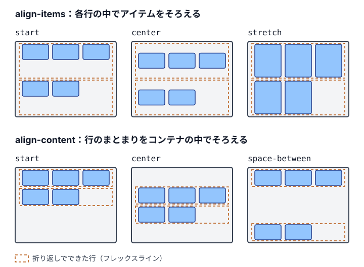

第7章 レイアウトの仕組み
この章では、要素の大きさと位置がどう決まるのかという、レイアウトの仕組みを扱います。CSSのレイアウトは、position）という複数の方式でできていて、同じ margin や inline-size でも、要素がどの方式の中にあるかで働き方が変わります。この章は、その規則を方式ごとに整理し直すための章です。
レイアウトの不具合の多くは、方式の規則を知らないまま値を足したことから生まれます。インライン要素に上下の余白を付けても空かない、position: sticky が留まらない、フレックスアイテムが縮まずにはみ出す、といった場面は、どれも方式の規則どおりの振る舞いです。値を少しずつ変えて見た目を合わせる前に、要素がどの方式の中にあり、何を基準に大きさが決まっているのかを確かめます※1 。
この章で判断できるようになること
この章を読むと、配置が思いどおりにならないとき、値を足す前に、要素がどの方式の中にあり、大きさが何で決まっているかから原因を特定できるようになります。フレックスアイテムがはみ出すなら自動の最小幅を、GridやFlexboxの子で position: sticky が留まらないなら align-self を確かめる、というように、症状に合った規則から調べられます。余白を margin、padding、gap のどれに受け持たせるか、マージンの相殺が起きる条件にあるか、display: contents で箱をなくしてよいかも判断できます。
この章の節
この章は次の12の節で構成しています。7-1で方式の全体像を示し、7-2〜7-10で方式ごとの規則を説明します。7-11と7-12では、位置指定を広げるdisplay: contents を扱います。
7-1 レイアウトの基礎 ：display、同じ幅の指定が方式ごとに違う意味を持つこと、包含ブロックの要約、重なり、FlexboxとGridの配置のプロパティ、効かない指定を調べる順番7-2 通常フローの基礎 ：ブロック方向とインライン方向、ブロックとインラインのボックス、行ボックスと匿名ボックス、幅と高さの決まり方、display: flow-root7-3 ボックスモデルの基礎 ：内容・padding・border・margin の領域、box-sizing、margin の負の値と auto、大きさに含まれない outline と box-shadow7-4 大きさの決まり方 ：auto と中身に合わせた大きさ、min-inline-size と max-inline-size による下限と上限、% の基準、幅いっぱいに広げる stretch7-5 marginの役割 ：縦に長い文書のための margin、margin・padding・gap が受け持つ余白の違い、レイアウトの間隔と文章の要素の間の余白の書き分け7-6 マージンの相殺 ：相殺が起きる条件と起きない条件、負のマージンを含む計算、display: flow-root による相殺の止め方7-7 Flexboxの基礎 ：主軸と交差軸、flex-grow・flex-shrink・flex-basis による空間の配り方、折り返し7-8 Gridの基礎 ：トラック・線・エリアの用語、fr・fit-content()・minmax() によるトラックの大きさ、明示的なグリッドと暗黙のグリッド、grid-template のエリア、アイテムの最小幅7-9 Gridでアイテムをそろえる ：*-items と *-content の違い、サブグリッドでそろえるカードの行と一覧の列、画像の幅に合わせて決める列7-10 positionの基礎 ：position の5つの値、包含ブロック、絶対配置の要素を中央に置く方法、sticky が留まらない原因7-11 アンカーポジショニングの基礎 ：anchor-name と暗黙のアンカー、anchor()、position-area の9マス、position-try-fallbacks による反転、未対応の環境への備え7-12 display: contentsで箱をなくす ：箱だけをなくす仕組み、幅で並びを変えるだけならエリアで組む理由、サブグリッドへの参加とラッパーの箱の出し入れ、ロールと hidden 属性の注意点
これらの仕組みを使って、作るものに合わせて手法を選び、余白を設計し、内容が変わっても崩れないように組む方法は、第11章「レイアウトを組む （巻2）」で扱います※2 。配置のパターンを部品にしたコンポジションは第12章「レイアウトコンポジション （巻2）」で、フレックスアイテムとグリッドアイテムの最小幅を0にするリセットとベーススタイル （巻2）」で説明しています。
この章のコード例では、説明に関係しない @layer の記述を省略しています。デモのCSSには省略せずに書いています。
初めて読むとき
初めて読むときは、「7-1 レイアウトの基礎 」「7-2 通常フローの基礎 」「7-3 ボックスモデルの基礎 」「7-4 大きさの決まり方 」「7-5 marginの役割 」「7-7 Flexboxの基礎 」「7-8 Gridの基礎 」を読みます。7-6のマージンの相殺は、余白の大きさが予想と違うときに読んでください。7-9以降のGridのそろえ方、position、アンカーポジショニング、display: contents は、その仕組みを使うときに読みます。
最初に押さえるルール
次のルールを先に押さえ、ほかのルールは、該当する場面で付録A「ルール一覧 （巻3）」から引けば足ります。
判断の問い
この章の内容で答えられる問いを1つ置きます。答えを開く前に、列の幅がどうなるかを予想してください。
内容領域の幅が320pxの親の中に、grid-template-columns: 1fr 1fr のグリッドを2つ置きます。どちらも、左の列に幅の大きい入力欄（<input size="40">）を、右の列に短い文字を入れています。違いは、Bのグリッドだけ、アイテムに min-inline-size: 0 を指定していることです。2つの列が等分にならないのは、AとBのどちらでしょうか。
.form-grid {
display : block grid ;
grid-template-columns : 1 fr 1 fr ;
gap : 16 px ;
}
/* B のグリッドのアイテムにだけ指定する */
.form-grid-b-item {
min-inline-size : 0 ;
} 答えと解説 Aです。単独の 1fr は minmax(auto, 1fr) で、下限が auto の列は、置かれたアイテムの最小幅より狭くなりません。グリッドアイテムの min-inline-size の初期値 auto は0ではなく、中身から決まる最小幅として扱われます。入力欄の最小幅はブラウザが size 属性から決めるので、左の列はその幅まで広がり、右の列が押しつぶされます。Chrome 152では、左の列が280px、右の列が24pxになりました（2026年10月確認）。
Bでは、アイテムの最小幅が0なので、列の下限も0になり、2つの列は gap を除いた幅を等分した152pxずつ（(320 − 16) ÷ 2）になります。入力欄は列の幅に合わせて縮みます※3 。本書では、この min-inline-size: 0 を次の章のベーススタイルとして全要素に指定し、列ごとに minmax(0, 1fr) と書かずに済ませます（「8-2 ベーススタイルに書くもの （8-2、巻2）」）。
次の章へ
ここまでで、CSSが値とレイアウトの方式から表示を決める仕組みを一通り確認しました。第III部では、この仕組みの上で、書いた本人以外が触っても壊れにくいCSSをどう書くかを決めます。最初に決めるのは、後から書くすべてのコンポーネントに影響する土台のスタイルなので、第8章「リセットとベーススタイル （巻2）」から始めます。
7-1 レイアウトの基礎
CSSのレイアウトは、1つの仕組みではなく、通常フロー、Flexbox、Grid、位置指定（position）といった複数の方式の組み合わせでできています。同じ margin や inline-size でも、要素がどの方式の中に置かれているかで、効き方が変わります。指定が思いどおりに効かないときは、値を足す前に、その要素がどの方式の中にあり、大きさや位置の基準になる要素（包含ブロック）と、重なり順を決める範囲（スタッキングコンテキスト）がどれかを確かめます。
この節で新しく判断するのは、効かない指定の原因を方式の規則、包含ブロック、スタッキングコンテキストのどれかから特定し、規則どおりの直し方を選ぶことです※1 。各方式の詳しい規則は、続く7-2〜7-10で説明します。
「効かない」指定はどこから来るのか
インライン要素に付けた margin-block、ブロックの親に書いた gap、留まらない position: sticky のように効かない指定は、壊れているわけではなく、その方式の規則どおりに振る舞っています。規則を知らないまま値を足すと、不具合は見た目の上では消えても、原因は残ります。
たとえば、インライン要素の上下の余白を position: relative と top でずらして作ると、その要素だけが行から浮き、文字の大きさを変えたときに重なります。正しい直し方は、要素を inline flow-root にして、ブロックの規則で余白を持たせることです。直し方を選ぶには、どの方式の規則が働いているかを知る必要があります。
🙅♂ Not Recommended: インライン要素を位置指定でずらして余白に見せる /* 🙅♂ Not Recommended */
._tag {
position : relative ;
inset-block-start : 4 px ;
} 🙆♂ Recommended: inline flow-root にして、ブロックの規則で余白を持たせる ._tag {
display : inline flow-root ;
margin-block : 4 px ;
} AIが生成するコードにも、同じ傾向があります。方式の違いを考えずに、display: flex と align-items: center を何にでも足し、効かなければ position: absolute で位置を合わせるコードはよく見かけます。レビューで「なぜこの指定が要るのか」を問うためにも、方式ごとの基本の振る舞いを押さえておきます。
本書で扱うレイアウトの方式と、それぞれの大きさの決め方は次のとおりです。
方式
指定
子の並べ方と大きさの決め方
説明する節
通常フロー
display: block など（デフォルト）ブロックは積まれて親の幅いっぱいに広がり、インラインは行の中を流れる
7-2
Flexbox
display: block flexアイテムの中身の大きさから出発し、余りや不足を配る
7-7
Grid
display: block grid親で行と列を決め、アイテムをセルに置く
7-8
位置指定
position: absolute など通常フローから外し、包含ブロックを基準に置く
7-10
コードでは、通常フローは何も書かず、FlexboxとGridは親の display で、位置指定は要素自身の position で選びます。
🙆♂ Recommended: レイアウトの方式を、親の display と要素自身の position で選ぶ /* 通常フロー：display を変えない */
._body {
margin-block-start : 16 px ;
}
/* Flexbox と Grid：親の display の内側の値で選ぶ */
._actions {
display : block flex ;
gap : 8 px ;
}
._list {
display : block grid ;
grid-template-columns : repeat ( auto-fill , minmax ( min ( 100 % , 240 px ), 1 fr ));
}
/* 位置指定：要素自身の position で選ぶ */
._badge {
position : absolute ;
inset-block-start : 8 px ;
inset-inline-end : 8 px ;
} 通常フローは、何も指定しない要素が従う方式です。ブロックレベルのボックスはブロック方向（横書きでは上から下）に積まれ、インラインレベルのボックスと文字は、行の中をインライン方向（横書きでは左から右）に流れます。FlexboxやGridへ切り替える前の仮の状態ではなく、行ボックス、匿名ボックス、マージンの相殺といった独自の規則を持つ方式です※2 。
このほかに、段組み（column-count）や表（display: table）の方式もあります。どちらも、子の大きさと位置を自分の規則で決める点では、上の4つと変わりません。
方式を決めるのは親の display
display の値は、外側と内側の2つの役割を持っています。外側は、その要素が親の通常フローの中でブロックとして積まれるか、インラインとして流れるかを決めます。内側は、その要素の子をどの方式で並べるかを決めます。本書が display: block flex のような2値構文で書くのは、この2つを分けて読めるようにするためです※3 。
つまり、要素がどの方式で並ぶかは、親の display の内側の値で決まります。親を display: block grid に変えると、子は通常フローではなくGridの規則で並び、子に書いた margin や inline-size の意味も変わります。要素自身の display を見ても、その要素がどう並ぶかは分かりません。
次のデモでは、inline-size: 96px と padding-block: 16px を指定した同じ <span> を、2つの親に入れています。通常フローの親では、<span> はインラインのまま行に流れ、幅は無視され、上下の padding は行の高さに加わりません。親を display: block flex にすると、同じ指定がアイテムの幅と高さとして効きます。
図7-1 親の display を変えると、子の同じ指定の効き方が変わる 例外は、要素自身の指定で方式から外れる場合です。position: absolute と fixed の要素は、親がどの方式でも、その流れから外れます。float した要素も通常フローからは外れますが、フレックスアイテムとグリッドアイテムでは float が無視され、ほかの子と同じように並びます。不具合を調べるときは、親の display と、要素自身の position と float の両方を確かめます。
同じ inline-size が方式ごとに違う意味を持つ
方式が変わると、同じプロパティが別の入力として読まれます。ここでは幅の指定で比べます。本書のコードでは論理プロパティの inline-size で書きますが、横書きでは width と同じ向きの大きさです。
通常フローの、置換要素でないインラインボックス（<span> や <a>）には、幅の指定が適用されません。行の中を文字と一緒に流れる箱で、幅は中身の文字から決まるからです。画像のような置換要素や、display: inline flow-root の要素は、インラインでも幅を持てます。通常フローのブロックでは、幅の指定は守られる値です。親の幅が足りなくても縮まず、親からはみ出します。指定が親の幅と合わないとき、通常フローは幅ではなく行末側の margin を計算し直して帳尻を合わせるからです。
フレックスアイテムでは、同じ指定が伸び縮みの出発点になります。flex-basis が初期値の auto なら、Flexboxは幅の指定をアイテムの仮の大きさとして使い、並べて足りなければ flex-shrink の比で縮めます。デフォルトでは、中身の最小幅より小さくはなりません※4 。
% の幅の基準になる包含ブロックも、方式で変わります。グリッドアイテムでは、アイテムを置いたグリッドエリアが包含ブロックになるので、inline-size: 50% は親ではなく、そのエリアの幅の半分です※5 。position: absolute の要素は、position が static 以外のいちばん近い祖先の padding の領域を基準にします。幅を指定しなければ、左右の両方の位置を決めない限り、中身に合わせて縮みます※6 。
要素が置かれた方式
inline-size: 1000pxinline-size: 50% の基準
通常フロー（置換要素でないインライン）
適用されない
適用されない
通常フロー（ブロック）
1000pxのまま。親より広ければはみ出す
親の内容の領域
Flexbox（横に並べるフレックスアイテム）
伸び縮みの出発点。足りなければ縮む
フレックスコンテナの内容の領域
Grid（グリッドアイテム）
1000pxのまま
アイテムが置かれたグリッドエリア
位置指定（absolute）
1000pxのまま
static 以外のいちばん近い祖先の padding の領域
次のデモでは、幅200pxの親の中に、inline-size: 280px を指定した子を置いています。通常フローのインラインでは指定が無視され、子は文字の幅になります。通常フローのブロックとグリッドアイテムでは280pxのまま親からはみ出し、フレックスアイテムでは親の幅まで縮みます。
図7-2 同じ inline-size: 280px が、置かれた方式によって無視される、はみ出す、縮む 直し方も、方式の規則に合わせて選びます。リンクに幅を持たせたいなら、値を変えずに display: inline flow-root を指定して、幅を持てる種類の箱へ変えます。フレックスアイテムが縮みすぎるときは、縮む量を決めているのは幅ではなく flex-shrink と最小幅なので、そちらで守ります※7 。
🙆♂ Recommended: 方式の規則に合わせて、幅を決める指定を選ぶ /* 通常フローのインライン：幅を持てる種類の箱に変える */
._link {
display : inline flow-root ;
inline-size : calc ( 160 / 16 * 1 rem );
}
/* フレックスアイテム：幅を出発点のまま保ち、縮ませない */
._thumbnail {
flex-shrink : 0 ;
inline-size : calc ( 96 / 16 * 1 rem );
} inline-size: 50% のような % や、絶対配置の inset は、包含ブロックという矩形を基準にします。通常フローの要素なら、包含ブロックはたいていいちばん近いブロックの親の内容の領域です※8 。
位置指定の要素は、包含ブロックの決まり方が違います。position: absolute の要素は position が static 以外のいちばん近い祖先を、fixed の要素はビューポートを基準にします。ただし、祖先に transform などがあると、その祖先が包含ブロックになります※9 。
カードの角にバッジを置くときは、カードに position: relative を指定して、カードを包含ブロックにします。
🙆♂ Recommended: カードを包含ブロックにして、バッジを角に置く ._card {
position : relative ;
}
._badge {
position : absolute ;
inset-block-end : 8 px ;
inset-inline-end : 8 px ;
} 次のデモでは、点線の枠が position: relative の祖先です。カードに position がないと、バッジは祖先の角を基準にして、カードの外に出ます。カードに position: relative を指定すると、バッジはカードの角に収まります。
図7-3 包含ブロックが変わると、絶対配置のバッジの基準が変わる 重なりと
要素の前後の重なりは、デフォルトではHTMLの順番で決まり、後に書いた要素が手前に描かれます。z-index で順番を変えられるのは、同じスタッキングコンテキストの中だけです。親が z-index: 1 のスタッキングコンテキストを作っていれば、子に z-index: 99 を指定しても、親の兄弟の z-index: 2 の要素より手前には出ません。
次のデモは、この例をそのまま並べたものです。親に z-index がないと、子の z-index: 99 が親の兄弟と比べられ、子が手前に出ます。親に z-index: 1 を指定すると、子は親の中に閉じ込められ、親ごと兄弟の後ろに回ります。
図7-4 親がスタッキングコンテキストを作ると、子の z-index は親の外と比べられない z-index が効くかどうかも、方式で変わります。通常フローの要素は、position を指定しないと z-index が効きませんが、フレックスアイテムとグリッドアイテムは、position がなくても効きます。スタッキングコンテキストは、opacity が1未満の要素や、transform を持つ要素などでも作られます。意図して作るときは isolation: isolate を使います※10 。
🙆♂ Recommended: z-index の数値を使わずにスタッキングコンテキストを作る ._card {
isolation : isolate ;
} FlexboxとGridが
display の内側を flex や grid にすると、その要素の子は、通常フローではなくFlexboxやGridの規則で並びます。子の外側の値は無視され、<span> のようなインラインの要素も、ブロックのように大きさを持つアイテムになります。マージンの相殺も、アイテムの間では起きません。
Flexboxは、アイテムの中身の大きさから出発して、余った空間や足りない空間をアイテムに配ります。Gridは、先に親で行と列を決め、アイテムをそのセルに置きます。前者は中身から外へ、後者は外から中身へと大きさを決める、と言い換えることもできます※11 。
配置のプロパティは、*-items と *-content で対象が違います。align-items は、各アイテムを、自分に割り当てられた領域（Gridならセル）の中でそろえます。align-content は、行や列のまとまり全体を、コンテナの中でそろえます。コンテナに余白があるときに、この違いが見た目に現れます。
折り返したFlexboxで、2つのプロパティの値ごとの配置を並べると、次の図のようになります。

align-content は、通常フローのブロックコンテナにも使えます。ブロックコンテナに指定すると、display を変えずに中身を上下の中央に置けます※12 。
次のデモでは、高さ200pxのコンテナに、高さ48pxの行を2つ持つGridと、段落1つのブロックを並べています。align-items: end では、各アイテムが自分のセルの下端にそろうだけで、行のまとまりはコンテナの上に残ります。align-content: end では、行のまとまりがコンテナの下端へ移ります。3つ目は、display をブロックのまま、align-content: center で段落を上下の中央に置いた例です。
図7-5 align-items と align-content の違いと、ブロックコンテナの align-content 方式どうしを組み合わせても、それぞれの規則は変わりません。GridやFlexboxのコンテナの中でも、position: absolute の子は流れから外れ、包含ブロックとスタッキングコンテキストの規則もそのまま働きます。一方、グリッドアイテム自身に position: sticky を指定すると、そのアイテムはデフォルトでセルの高さいっぱいに伸びるので、ずれる余地がなく、留まらないように見えます。同じアイテムに align-self: start を指定して伸びるのを止めると留まります※13 。組み合わせで起きる問題も、それぞれの方式の規則に分けて考えれば、原因を特定できます。
🙆♂ Recommended: グリッドアイテムを伸ばさずに、スクロールに追従させる ._layout {
display : block grid ;
grid-template-columns : 1 fr calc ( 240 / 16 * 1 rem );
& > ._ sidebar {
align-self : start ;
}
}
._sidebar {
position : sticky ;
inset-block-start : 16 px ;
} 効かない指定を調べる順番
ここまでの仕組みを、効かない指定を調べる順番にまとめます。まず親の display の内側の値を見て、要素が通常フロー、Flexbox、Gridのどれで並ぶかを確かめます。次に要素自身の position と float を見て、その流れから外れていないかを確かめます。最後に、そのプロパティがその方式で何を意味するか、包含ブロックとスタッキングコンテキストがどの要素かを確かめます（ルール identify-layout-mode-first
ブラウザの開発者ツールも、この確認に使えます。Chromeの開発者ツールは、正しい宣言でもほかの指定の都合で効いていないものを薄い文字で表示し、横のアイコンにその理由を示します（Chrome 108から）。Firefoxの開発者ツールにも、同じように効いていない宣言を示す機能があり（Firefox 70から）、インライン要素に書いた width には、インライン要素には効かないという理由が表示されます。
ガイドライン
推奨 配置が思いどおりにならないときは、値を足したり position でずらしたりする前に、その要素がどのレイアウトの方式（通常フロー、Flexbox、Grid、位置指定）の中にあり、どの要素が包含ブロックとスタッキングコンテキストになっているかを確かめる。
identify-layout-mode-first
参考リンク
7-2 通常フローの基礎
通常フロー（フローレイアウト）は、display を変えていない要素が従うレイアウトの方式です。FlexboxやGridと同じく独自の規則を持ち、ブロックレベルのボックスはブロック方向に積まれ、インラインレベルのボックスと文字は行の中をインライン方向に流れます。ブロックの幅は包含ブロックの幅いっぱいに広がり、高さは中身から決まります。
gap や align-items が効かない、インライン要素の上下の margin が空かない、float が親からはみ出すといった現象は、どれも通常フローの規則どおりの振る舞いです。この節では、その規則を、FlexboxやGridと同じ1つの方式として説明します※1 。
通常フローは、display: flex や grid を指定する前の、何も起きていない状態だと思われがちです。そう考えると、gap: 16px を書いたのに子の間が空かない、align-items: center で中央に寄らないといった場面で、指定の誤りではなくブラウザの不具合を疑うことになります。実際には、通常フローがこれらのプロパティを使わない方式だというだけです。
🙅♂ Not Recommended: ブロックのままの親に gap と align-items を書く /* 🙅♂ Not Recommended */
._list {
gap : 16 px ;
align-items : center ;
} インライン要素の上下の margin が空かない、画像の下に隙間ができる、親の背景が中の float を囲まない、といった現象も、通常フローの規則を知っていれば理由から説明できます。
AIが生成するコードにも、この誤解が表れます。ブロックの親に gap を書き、効かなければ子に margin を足す、あるいは理由を確かめずに親を display: flex に変えるコードはよく見かけます。値を足す前に、その要素がどの方式の中にあるかを確かめます（ルール identify-layout-mode-first
ブロック方向とインライン方向
通常フローには2つの方向があります。ブロック方向は段落が積まれていく方向で、横書きでは上から下です。インライン方向は1行の中で文字が進む方向で、横書きでは左から右です。ブロックレベルのボックスはブロック方向に積まれ、インラインレベルのボックスはインライン方向に流れて、行の端で折り返します。
この2つの方向は、物理的な上下左右ではなく、writing-mode で決まります。縦書きにすると、ブロック方向は右から左に、インライン方向は上から下に変わります。本書が width や margin-top ではなく、inline-size や margin-block-start のような論理プロパティを使うのは、書字方向が変わっても同じ意味で働くからです※2 。
🙆♂ Recommended: 方向を論理プロパティで書く ._block {
padding-inline-start : 8 px ;
border-inline-start : 4 px solid ;
} 次のデモでは、この指定をした2つの段落を、横書きの親と writing-mode: vertical-rl の親に入れています。横書きでは段落が上から下へ積まれ、線は左に引かれます。縦書きでは、同じ指定のまま段落が右から左へ積まれ、線は上に引かれます。
図7-6 同じ論理プロパティが、書字方向に合わせて向きを変える ブロックレベルとインラインレベルのボックス
display の値は、2つの役割を持っています。1つは、その要素が親の中でブロックとして積まれるか、インラインとして流れるかという外側の振る舞いです。もう1つは、その要素の子をどの方式で並べるかという内側の振る舞いです。<p> や <div> がブロックレベルに、<span> や <a> がインラインレベルになるのは、ブラウザのデフォルトスタイルが display を決めているからで、要素そのものの性質ではありません。
本書は display: block flex のような2値構文で書きます※3 。block は外側がブロックで内側が通常フロー、inline は外側がインラインで内側も通常フローです。inline-block は、2値構文では inline flow-root になり、文字と同じ行に並びながら、中ではブロックの規則で大きさを持ちます。
Baseline 広く利用可能 2026年1月から（新しく利用可能になったのは2023年7月）
display の2値構文
Chrome 115 Edge 115 Firefox 70 Safari 15 iOS Safari 15 web-features 3.40.0 のデータ（2026年9月確認）
内側の値が flow か flow-root の要素は、ブロックコンテナと呼ばれ、子を通常フローで並べます。外側の値は、親が通常フローのときだけ意味を持ちます。親がFlexboxやGridなら、<span> もブロックのように大きさを持つアイテムになり、外側の値は無視されます。
🙆♂ Recommended: 外側と内側を2値構文で書き分ける ._label {
display : block flow ;
}
._tag {
display : inline flow-root ;
} 次のデモでは、文字の間に置いた2つの <span> の display を変えています。block flow では <span> が行から出てブロック方向に積まれ、inline では文字と同じ行に流れます。inline flow-root は文字と同じ行に流れながら、上下の padding の分だけ行を押し広げます。
図7-7 display の外側と内側の値で、span の並び方が変わる 行ボックスとベースライン
インラインレベルのボックスは、行ボックスという横長の箱の中に並びます。行ボックスの高さは、中の文字とボックスの line-height から決まり、行の中の要素はデフォルトで文字のベースライン（アルファベットの下端の線）にそろいます。インライン要素の上下の padding は背景を広げて描かれますが、行ボックスの高さには加わらず、上下の margin は無視されます※4 。
画像の下にできる数ピクセルの隙間も、行ボックスの規則から生まれます。<img> はインラインレベルの要素なので、下端をベースラインにそろえ、その下に文字のディセンダー（「g」や「y」の下に出る部分）のための空きが残ります。kiso.cssは画像や動画に vertical-align: bottom を指定して、この隙間をなくしています。
次のデモでは、背景色を付けた親に画像を1枚入れています。ブラウザのデフォルトの vertical-align: baseline では、画像の下に背景色の帯が残ります。kiso.cssの vertical-align: bottom では、画像の下端が行の下端にそろい、帯が消えます。
図7-8 画像をベースラインにそろえると、下に隙間ができる vertical-align: middle は、要素の中心を、親のベースラインからx-height（小文字の「x」の高さ）の半分だけ上の位置に合わせる指定です。フォントの寸法で位置が決まるので、行の見た目の中央と一致しないことがあります。アイコンと文字の中央をそろえたいときは、親をFlexboxにして align-items: center を使います。
🙆♂ Recommended: アイコンと文字の中央を Flexbox でそろえる ._link {
display : inline flex ;
gap : 4 px ;
align-items : center ;
} インライン要素が複数の行にまたがると、背景、border、padding は、各行の断片に分けて描かれます。デフォルトでは1つの帯を行の端で切ったように描かれ、行の端の padding と角丸は失われます。各行の断片を独立した箱として描きたいときは、box-decoration-break: clone を指定します。Safariは接頭辞付きの -webkit-box-decoration-break だけに対応しています（2026年10月確認）※5 。
Baseline 一部のブラウザのみ
box-decoration-break
Chrome 130 Edge 130 Firefox 32 Safari 未対応 iOS Safari 未対応 web-features 3.40.0 のデータ（2026年9月確認）
🙆♂ Recommended: 行ごとの断片を独立した箱として描く ._marker {
padding-inline : 4 px ;
border-radius : 4 px ;
background-color : oklch ( 92 % 0.08 90 deg );
/* Safari は接頭辞なしの box-decoration-break に対応していない（2026年10月） */
/* stylelint-disable-next-line property-no-vendor-prefix */
-webkit-box-decoration-break : clone ;
box-decoration-break : clone ;
} 匿名ボックス
ブラウザは、要素に包まれていない文字にも、目に見えない箱（匿名ボックス）を作ります。<p>これは<em>強調</em>です</p> なら、「これは」と「です」がそれぞれ匿名のインラインボックスになり、<em> と並んで1行に流れます。ブロックコンテナの中にブロックと文字が混ざると、文字の側は匿名のブロックボックスに包まれ、ブロックどうしとして積まれます。匿名ボックスにはクラスを付けられないので、スタイルは親から継承した値で決まります。
匿名ボックスは、HTMLの改行や空白からも作られます。要素を inline flow-root（inline-block）にして横に並べると、タグの間の改行が1文字分の空白として行に入り、要素の間に意図しない隙間ができます。
🙅♂ Not Recommended: inline flow-root（inline-block）で横に並べる /* 🙅♂ Not Recommended */
.tag-list {
& > li {
display : inline flow-root ;
margin-inline-end : 8 px ;
}
} この隙間は親の font-size で幅が変わるので、margin の値を調整しても消えません。親の font-size を0にする、HTMLの空白を消すといった回避策も、別の副作用を生みます。要素を横に並べるときは、Flexboxにして gap で間隔を決めます（no-inline-block-for-rows
🙆♂ Recommended: Flexbox にして gap で間隔を決める .tag-list {
display : block flex ;
flex-wrap : wrap ;
gap : 8 px ;
} 幅と高さの決まり方
通常フローのブロックは、inline-size が auto のとき、包含ブロック（多くは親の内容の領域）の幅から左右の margin を引いた残りいっぱいに広がります。block-size が auto のときは、中身を収める高さになります。幅は外から、高さは中から決まると覚えておくと、ブロックの振る舞いを予想できます。
幅を指定すると、通常フローはその値を守ります。親より広い inline-size を指定したブロックは、縮まずに親からはみ出します。Flexboxでは同じ inline-size が flex-basis の出発点として扱われ、足りなければ縮むので、同じ指定でも結果が変わります。
次のデモでは、幅200pxの親に子を1つ入れています。inline-size: auto の子は親の幅いっぱいに広がり、inline-size: 280px の子は親からはみ出します。同じ280pxの子でも、親を display: block flex にすると、親の幅まで縮みます。
デモ7-2-4 通常フローは指定した幅を守り、Flexbox は縮める（補足サイト）
block-size: 50% のような高さの割合は、親の高さが中身で決まる（auto の）ときには解決できず、auto として扱われます。親の高さが子から決まり、子の高さが親から決まるという循環になるからです。縦の大きさを親に合わせたいときは、親をGridにして行を決めるほうが確実です。
<span> のような通常の非置換インラインボックスには inline-size と block-size が適用されず、大きさは中身と line-height で決まります。インラインレベルのボックスでも、<img> のような置換要素や、display: inline flow-root のボックスには大きさを指定できます※6 。
display: flow-root通常フローのボックスは、整形コンテキストという範囲の中で並びます。ブロックレベルのボックスを積む範囲をブロック整形コンテキスト（BFC）、インラインレベルのボックスを行に並べる範囲をインライン整形コンテキストと呼びます。新しいBFCを作った要素の中は、外から独立して並べられます。
独立していることは、3つの振る舞いに表れます。中の float は要素の外へはみ出さず、要素の高さに含まれます。中の子の margin は、要素の margin と相殺しません。要素自体も、隣の float と重ならず、その横に収まります。
新しいBFCは、ルート要素、float した要素、絶対配置の要素、inline flow-root の要素、overflow が visible と clip 以外の要素などが作ります。このうち、BFCを作ることだけを目的にした値が display: flow-root です。overflow: hidden もBFCを作りますが、影や絶対配置の子を切り取り、中の position: sticky を妨げるので、BFCのために使うのは避けます（flow-root-for-margin-collapse
Baseline 広く利用可能 2022年7月から（新しく利用可能になったのは2020年1月）
display: flow-root
Chrome 58 Edge 79 Firefox 53 Safari 13 iOS Safari 13 web-features 3.40.0 のデータ（2026年9月確認）
次のデモは、float した四角と短い本文を入れた親を2つ並べたものです。通常のブロックの親は float を高さに含まないので、四角が親の下へはみ出し、次の要素まで回り込みます。親に display: block flow-root を指定すると、親が新しいBFCを作り、四角を内側に収めます。
デモ7-2-5 display: flow-root で、float を親の内側に収める（補足サイト）
画像に文字を回り込ませる部品は、次のように書けます。float の値は、書字方向に合わせて inline-start のような論理値で書きます。
🙆♂ Recommended: 回り込みを親の内側に収める ._media {
display : block flow-root ;
}
._image {
float : inline-start ;
max-inline-size : 40 % ;
margin-inline-end : 16 px ;
} 以前は、float を囲むために、親の ::after に clear: both を指定するclearfixを書いていました。display: flow-root なら擬似要素なしに同じことができます（float-for-text-wrap※7 。
通常フローで効かないプロパティ
gap は、通常フローのブロックコンテナには効きません。gap が働くのはFlexbox、Grid、段組みです。同じく、align-items、justify-content、flex-grow、order のようなFlexboxやGrid向けのプロパティも、ブロックコンテナや、その子に指定しても何も変えません。
効かない指定は、残しておくと読む人を誤らせます。gap が書いてあれば子の間隔はそこで決まっていると読まれますが、実際の間隔は子の margin です。FlexboxやGridでだけ働くプロパティは、display を flex か grid にした要素にだけ書きます（no-flex-grid-props-in-flow
例外が align-content です。2024年から、ブロックコンテナにも使えるようになりました（2026年10月確認）。親を display: block grid に変えなくても、align-content: center だけで、中身を上下の中央に置けます。ただし、justify-content はブロックコンテナでは効かないので、左右の中央寄せは margin-inline: auto で書きます。
Baseline 新しく利用可能 2024年4月から
ブロックコンテナの align-content
Chrome 123 Edge 123 Firefox 125 Safari 17.4 iOS Safari 17.4 web-features 3.40.0 のデータ（2026年9月確認）
🙆♂ Recommended: ブロックのまま、中身を上下の中央に置く ._hero {
align-content : center ;
min-block-size : calc ( 320 / 16 * 1 rem );
} z-index も、通常フローの要素には効きません。position が static のブロックに z-index を指定しても、重なり順は変わりません。一方、フレックスアイテムとグリッドアイテムは、position を指定しなくても z-index が効きます。
同じプロパティでも方式で意味が変わる
ここまでの規則から分かるように、プロパティの意味は、要素がどの方式の中にあるかで変わります。inline-size は、通常フローでは守られる値で、Flexboxでは縮む出発点です。margin-block: auto は、通常フローでは0として扱われ、FlexboxやGridでは余った空間を吸収して要素を寄せます。
min-inline-size: auto も、通常フローのブロックでは0ですが、フレックスアイテムでは中身の最小幅として扱われ、アイテムが縮まない原因になります※8 。マージンの相殺は通常フローでだけ起き、フレックスアイテムとグリッドアイテムの間では起きません。
方式を決めるのは、要素自身ではなく親の display の内側の値です。親を flex に変えると、子のすべてが通常フローの規則の代わりにFlexboxの規則で並び、子の指定の意味がまとめて変わります。
次のデモでは、文字、<span>、<p> が混ざった同じHTMLを、通常フロー、Flexbox、Gridの親に入れています。通常フローでは、<p> が幅いっぱいに広がり、その前後の文字は匿名のブロックボックスに包まれて別の行になります。<span> には上下の margin を付けていますが、通常フローでは無視されます。Flexboxでは、文字と要素が中身の幅のアイテムとして横に並び、<span> の上下の margin も効きます。Gridでは、それぞれが1行ずつのアイテムになり、幅いっぱいに伸びます。
図7-9 同じ HTML でも、通常フロー、Flexbox、Grid で並び方が変わる たとえば、ボタンを margin-block-start: auto でカードの下端へ寄せる書き方は、カードが通常フローのままでは働かず、カードを縦向きのFlexboxにすると働きます。
🙆♂ Recommended: 縦向きの Flexbox で、ボタンをカードの下端に寄せる ._card {
display : block flex ;
flex-direction : column ;
}
._button {
margin-block-start : auto ;
} 補足と注意点
通常フローは、FlexboxやGridの代わりが見つかるまでの仮の状態ではありません。見出し、段落、リスト、画像が続く本文は、通常フローのまま margin で間隔を作るほうが、float による回り込みや margin の相殺が働きます（prose-in-normal-flowgap で間隔を決めます※9 。
親をFlexboxやGridにしても、変わるのは子の並べ方だけです。親自身は、外側の値に従って、祖先の通常フローの中にブロックとして積まれます。display: block flex の block は、この外側の振る舞いを表しています。
position: absolute と fixed の要素、float した要素は、通常フローから外れます。float の要素は、後に続く行ボックスを横へ押しやります※10 。
ガイドライン
非推奨 要素を横に並べるために display: inline-block（inline flow-root）を使わず、親を Flexbox か Grid にして gap で間隔を決める。
no-inline-block-for-rows
非推奨 gap、align-items、justify-content のように Flexbox や Grid でだけ働くプロパティを、display が flex でも grid でもない通常フローの要素に書かない。
no-flex-grid-props-in-flow
参考リンク
7-3 ボックスモデルの基礎
要素は、内側から順に、内容、padding、border、margin の4つの領域を持つ箱（ボックス）として描かれます。inline-size がどの領域までの幅を指すかは box-sizing で決まり、本書ではkiso.cssに合わせて、すべての要素を border-box にしています。指定した幅は、border の外周までの幅です。
この節では、4つの領域と box-sizing に加えて、margin の負の値と auto、ボックスの大きさに含まれない outline と box-shadow、インライン要素での余白の扱いを説明します※1 。
指定した幅と見た目の幅がずれる理由
inline-size: 240px と書いた要素が、画面上では304pxになることがあります。box-sizing が初期値の content-box で、左右に24pxの padding と8pxの border が付いている場合です。指定した値は内容の領域の幅で、padding と border はその外側に足されます。
この仕組みのまま列の幅を合わせると、calc(50% - 34px) のような引き算が要素ごとに入り込みます。padding を変えるたびに引き算も直す必要があり、直し忘れると列の合計が親の幅を超えて折り返します。
🙅♂ Not Recommended: padding と border の分を幅から引いて合わせる /* 🙅♂ Not Recommended */
.card {
box-sizing : content-box ;
inline-size : calc ( 50 % - 34 px );
padding : 16 px ;
border : 1 px solid oklch ( 85 % 0 0 deg );
} AIが生成するコードでは、コンポーネントごとに box-sizing: border-box を書き足す例もよく見かけます。全称セレクタで指定済みなら、この宣言は何も変えません。どちらも、どの領域が幅として数えられるかを知っていれば書かずに済むコードです。
4つの領域と box-sizing
ボックスのいちばん内側は、文字や子要素が置かれる内容の領域です。その外側に、内容と枠の間を空ける padding、枠線を描く border、ほかのボックスとの間を空ける margin の領域が順に重なります。background-clip の初期値は border-box なので、背景色は border の下まで塗られ、破線の枠線の隙間からも見えます。
次のデモは、ボックスの4つの領域を色分けしたものです。内容の領域は緑、padding の領域は青、margin の領域は親の斜線で表しています。
図7-10 ボックスの4つの領域と、背景が描かれる範囲 margin の領域には、要素自身の背景は描かれず、クリックの対象にもなりません。ボタンの押せる範囲を広げるときに margin ではなく padding を使うのは、このためです※2 。
box-sizing は、inline-size と block-size がどの領域の大きさを指すかを決めます。初期値の content-box では内容の領域を指し、border-box では border の外周までを指します。kiso.cssは、全称セレクタと ::before、::after を border-box にしています※3 。そのため、inline-size: 50% の要素は、padding をいくつにしても親の半分に収まります。
🙆♂ Recommended: border-box を前提に、幅と余白を別々に決める .card {
inline-size : 50 % ;
padding : 16 px ;
border : 1 px solid oklch ( 85 % 0 0 deg );
} 次のデモでは、同じ240px相当の inline-size を指定した2つの要素を、content-box と border-box で比べています。どちらも左右に24pxの padding と8pxの border を持ちます。content-box の要素は上の帯より64px広い304pxになり、border-box の要素は帯と同じ幅に収まります。
図7-11 同じ inline-size でも、box-sizing によって全体の幅が変わる content-box に戻すのは、内容の幅を固定したい要素だけです。その代表が、次に説明する、最大幅と左右の padding で中央に寄せる要素です。
border-box を取り消して最大幅を内容の幅にする最大幅を決めて中央に寄せ、左右に padding を付ける要素では、border-box が不便になります。max-inline-size に padding が含まれるので、内容の幅は最大幅から左右の padding を引いた分しかありません。内容を1140px相当に保とうとすると、最大幅に padding を足す calc() を書くことになり、padding の値を変えるたびに式も直す必要があります。
🙅♂ Not Recommended: 最大幅に左右の padding を足して、内容の幅を保つ /* 🙅♂ Not Recommended */
._container {
--_max-inline-size : calc ( 1140 / 16 * 1 rem );
--_padding-inline : 20 px ;
max-inline-size : calc ( var ( --_max-inline-size ) + var ( --_padding-inline ) * 2 );
margin-inline : auto ;
padding-inline : var ( --_padding-inline );
} この要素だけ box-sizing: unset にすれば、足し算は要りません。content-box では max-inline-size が内容の領域の幅を指すので、指定した最大幅がそのまま内容の幅になり、padding はその外側に付きます。画面が狭いときは、ブロックの auto の幅が padding を含めて親に収まるので、はみ出しもしません（ルール unset-box-sizing-for-content-max-width）。
🙆♂ Recommended: box-sizing を unset にして、最大幅を内容の幅にする ._container {
box-sizing : unset ;
max-inline-size : calc ( 1140 / 16 * 1 rem );
margin-inline : auto ;
padding-inline : 20 px ;
} 次のデモでは、max-inline-size が240px相当で左右に20pxの padding を持つ2つの要素を比べています。緑が内容の領域です。border-box のままの要素では内容の幅が200pxに減り、box-sizing: unset の要素では内容の幅が240pxのまま、padding を含めた全体が280pxになります。
デモ7-3-3 box-sizing を unset にすると、最大幅が内容の幅になる（補足サイト）
unset は、継承するプロパティでは親の値を、継承しないプロパティでは初期値を使うキーワードで、継承しない box-sizing では初期値の content-box になります。本書で content-box と書かずに unset と書くのは、「ベーススタイルの border-box を取り消す」という意図を宣言で示すためです。content-box と書くと、その要素のためにボックスの数え方を選んだように読めます。同じ理由で、「17-6 フォーム部品 （巻3）」でも、行数で高さを決めるテキストエリアに box-sizing: unset を書いています。
content-box へ戻した要素で inline-size: 100% を指定すると、padding の分だけ親からはみ出します。幅は auto のままにし、上限だけを max-inline-size で決めます（「2-3 保守しやすさを最優先にする 」）。また、この方法は、画面幅いっぱいに広げる子要素を持たない要素に向いています。広げる子要素が混ざるページのレイアウトは、左右に余白の列を持つGridで組みます※4 。
margin の負の値と automargin には負の値を指定できます。margin-block-start を負にすると要素は前の要素に重なるように引き上げられ、幅が auto のブロックの margin-inline を負にすると、その分だけ横に広がります。負のマージンは、コンポジションの子に付いた余白を親の端で打ち消すといった、余白の調整に使います。要素を重ねる目的なら、Gridの同じエリアに置くほうが、重ねたどちらの大きさも親の高さに反映されます（「11-6 重なりと全幅 （11-6、巻2）」）。
次の例では、カードの画像の左右に、カードの padding と同じ大きさの負の margin を付けています。画像の幅は auto のままなので、左右の padding の分だけ広がり、カードの端まで届きます。
🙆♂ Recommended: 負の margin で、親の padding を越えて端まで広げる @scope (.scoped.card) to (.scoped) {
:scope {
--_padding : 24 px ;
padding : var ( --_padding );
}
._image {
margin-inline : calc ( var ( --_padding ) * -1 );
}
} margin の auto は、余った空間を受け取る値です。通常フローのブロックでは、inline-size、左右の margin、padding、border の合計が包含ブロックの幅と等しくなるように決まります。左右を auto にすると、余りが等分されて中央に寄ります（「7-3 ボックスモデルの基礎 」）。通常フローでは上下の auto は0として扱われ、上下の中央寄せには使えません。
フレックスアイテムとグリッドアイテムでは、上下の auto も余った空間を受け取ります。フレックスアイテムの1つに margin-inline-start: auto を付ければ、その要素から後ろが行の末尾に寄ります（「11-1 レイアウト手法の選び方 （11-1、巻2）」）。
🙆♂ Recommended: auto の margin で、ログインのリンクを行の末尾に寄せる ._header {
display : block flex ;
gap : 16 px ;
align-items : center ;
}
._login {
margin-inline-start : auto ;
} 次のデモの上は、幅を中身に合わせたブロックの margin-inline を auto にしたもので、左右の余りが等分されて中央に寄ります。下は3つ並んだフレックスアイテムの最後の1つに margin-inline-start: auto を指定したもので、行の余りをすべてその margin が受け取ります。
デモ7-3-4 auto の margin が、余った空間を受け取る（補足サイト）
ボックスの大きさに含まれない outline と box-shadow
outline と box-shadow は、ボックスの外側に描かれますが、ボックスの大きさには含まれません。付けたり太さを変えたりしても、要素自身と周りの要素の位置は変わらず、はみ出した部分でスクロールバーが出ることもありません。その代わり、周りの要素に重なって描かれ、overflow: clip の祖先では切り取られます。
一方、border はボックスの大きさに含まれるので、ホバーや選択の状態で border を足すと、要素が広がって隣の要素や後ろの行が押し出されます。状態で枠を足すなら、同じ太さの透明な border を最初から置いて色だけ変えるか、outline や box-shadow で描きます。
🙆♂ Recommended: 透明な border を置いておき、選択の状態では色だけを変える @scope (.scoped.tabs) to (.scoped) {
._tab {
padding-block : 8 px ;
border-block-end : 2 px solid transparent ;
&[ aria-selected =" true "] {
border-block-end-color : currentColor ;
}
}
} フォーカスリングを outline で描くのも、この性質によります。リングを付けても周りがずれず、強制カラーモードでも表示が残ります※5 。
次のデモでは、1行目のBにだけ outline と box-shadow を付けています。装飾は隣のAとCに重なって描かれますが、AとCの位置は装飾のない2行目と変わりません。
デモ7-3-5 outline と box-shadow はボックスの大きさに含まれない（補足サイト）
インライン要素の padding と margin
<span> や <a> のようなインライン要素では、左右の padding、border、margin は前後の文字を押し広げますが、上下の値は行の高さに反映されません。上下の margin は無視され、上下の padding と border は描かれるものの、行の高さは line-height だけで決まるので、背景や枠線が前後の行に重なります。インライン要素には、inline-size と block-size も適用されません。
文中のリンクに上下の padding を付けると、背景と押せる範囲は上下に広がりますが、行の間隔は変わらず、前後の行の文字に重なります。そのため、上下の余白として見せたい場合には使えません。
上下の余白を行の高さに反映させたいときは、要素を display: inline flow-root（inline-block）にします。外側はインラインのまま、内側がブロックの規則になるので、上下の padding、margin、inline-size がボックスの大きさに反映されます。<img> のような置換要素も、インラインのまま上下の値が行の高さに反映されます。
🙆♂ Recommended: 上下の余白を行の高さに反映させるタグは inline flow-root にする ._tag {
display : inline flow-root ;
padding-block : 4 px ;
padding-inline : 8 px ;
border-radius : 4 px ;
background-color : oklch ( 95 % 0.03 250 deg );
} 次のデモは、インライン要素に上下12pxの padding と margin を付けたものです。1つ目の段落では、背景が前後の行に重なるだけで行の間隔は変わらず、inline flow-root にした2つ目の段落では、その行だけ高さが増えています。
図7-12 インライン要素と inline flow-root の要素で、上下の余白の扱いが違う 補足と注意点
border-box でも、指定した幅より大きくなることがあります。padding と border の合計が指定した幅を超えると、内容の領域は0で止まり、ボックスは padding と border の合計まで広がります。小さな inline-size の要素に大きな padding を付けるときは、この下限に気を付けます。
この下限があるので、padding の違うフレックスアイテムは、flex: 1 でも幅がそろいません（「7-7 Flexboxの基礎 」の「flex: 1 でも列の幅がそろわない場合」）。
ガイドライン
推奨 box-sizing はベーススタイル（kiso.css）の全称セレクタで border-box にそろえ、コンポーネントで box-sizing: border-box を書き足さない。
box-sizing-border-box-base
推奨 画面幅いっぱいに広げる子要素を持たない要素を、最大幅と左右の padding で中央に寄せ、内容の幅を最大幅にそろえるときは、calc() で最大幅に padding を足さず、box-sizing: unset で content-box に戻す。
unset-box-sizing-for-content-max-width
推奨 ホバーや選択などの状態で枠線を足すときは、border-width を変えず、同じ太さの透明な border を最初から置いて色だけを変えるか、outline か box-shadow で描く。
box-state-border-without-shift
必須 ブロックの左右の中央寄せには、margin: 0 auto や margin: auto ではなく margin-inline: auto を使う。
margin-inline-auto-centering
参考リンク
7-4 大きさの決まり方
大きさを指定しないときの auto は、ブロックの幅なら横いっぱい、高さなら中身の高さを意味します。中身に合わせた幅には fit-content を使い、固定の長さは inline-size ではなく、min-inline-size や max-inline-size で下限と上限として書きます。% は% は親の高さが決まっているときにしか働きません。自然には広がらない要素を幅いっぱいに広げるときは、100% ではなく stretch を使います。
この節で扱うのは、ボックスの大きさがどの規則で決まるかです※1 。
auto と中身に合わせた大きさinline-size と block-size の初期値は auto です。通常フローのブロックでは、inline-size: auto は包含ブロックの幅から左右の margin を引いた残りいっぱいの幅、block-size: auto は中身を収める高さを表します。一方、float の要素、inline flow-root の要素、左右の片側しか位置を指定していない絶対配置の要素、横に並ぶフレックスアイテムの inline-size: auto は、中身に合わせた幅を表します。絶対配置の要素でも inset-inline で左右の両方を指定すると、auto の幅は包含ブロックいっぱいに広がり、縦に並ぶフレックスアイテムも align-items の初期値（stretch）によってコンテナの幅まで広がります。auto の意味は、要素がどのレイアウトの方式の中にあるかと、位置や揃え方の指定で変わります※2 。
中身に合わせた幅は、キーワードで明示できます。min-content は、折り返せる位置ですべて折り返したときの幅で、英語なら最も長い単語の幅です。日本語は文字の間で折り返せるので、ほぼ1文字の幅になります。kiso.cssのように overflow-wrap: anywhere を指定していると、英単語の途中でも折り返せるので、英語でもほぼ1文字の幅になります。max-content は、一度も折り返さないときの幅です。
fit-content は、使える幅の中で max-content まで広がり、使える幅が狭ければその幅に縮み、min-content より狭くはならない値です。ラベルやバッジのように、中身の幅だけを占め、親が狭いときは折り返してほしい要素に使います。
🙆♂ Recommended: ブロックのまま、幅だけを中身に合わせる .badge {
inline-size : fit-content ;
padding-inline : 8 px ;
border-radius : 4 px ;
background-color : oklch ( 95 % 0.03 250 deg );
} 次のデモでは、同じ文の要素を、中身より狭い120pxの枠に入れています。min-content は1文字ずつ折り返し、max-content は折り返さずに枠からはみ出し、fit-content は枠の幅まで広がってそこで折り返します。
図7-13 min-content、max-content、fit-content の幅の違い 幅を中身に合わせる目的で display: inline-block や float に変えると、要素が前後の文字と同じ行に並ぶなど、外側の振る舞いまで変わります。fit-content なら、ブロックのまま幅だけが変わります。2026年10月の時点で、すべての主要なブラウザが対応しています。
Baseline 広く利用可能 2024年5月から（新しく利用可能になったのは2021年11月）
fit-content
Chrome 46 Edge 79 Firefox 94 Safari 11 iOS Safari 11 web-features 3.40.0 のデータ（2026年9月確認）
最小値と最大値による制約
min-inline-size と max-inline-size は、計算した幅に下限と上限を付けるプロパティです。下限と上限が矛盾したときは、下限が優先されます。min-inline-size の初期値 auto は、通常のブロックでは0ですが、フレックスアイテムとグリッドアイテムでは中身の最小幅になり、長いURLを含むアイテムが縮まない原因になります。本書では、ベーススタイルで全要素に min-inline-size: 0 を指定しています（「8-2 ベーススタイルに書くもの （8-2、巻2）」）。
固定の幅は、inline-size ではなく max-inline-size で上限として書きます。上限なら、親がそれより狭い場所では親の幅まで縮みます（「13-1 検討する順番 （13-1、巻2）」）。逆に、固定の長さの下限は親より大きくなってはみ出すことがあるので、min(100%, …) で親の幅を上限にします。
🙆♂ Recommended: 固定の下限は、親の幅を超えないようにする .button {
display : inline flex ;
justify-content : center ;
align-items : center ;
min-inline-size : min ( 100 % , calc ( 240 / 16 * 1 rem ));
padding-block : 12 px ;
padding-inline : 24 px ;
} min(100%, calc(240 / 16 * 1rem)) は、親の幅と240px相当のうち小さいほうを下限にします。広い場所では240px相当を保ち、狭い場所では親の幅まで縮みます。minmax() の最小値も同じ形で書きます（「11-3 サイズと内容の変化に耐える （11-3、巻2）」）。
次のデモでは、幅240pxの親の中に、inline-size: fit-content の要素を3つ置いています。1つ目は下限の320pxで親からはみ出し、min(100%, …) で書いた2つ目は親の240pxで止まります。3つ目は下限200pxと上限120pxが矛盾し、下限の200pxになります。
デモ7-4-2 固定の下限ははみ出し、下限と上限が矛盾すると下限が勝つ（補足サイト）
% の基準inline-size の % は、包含ブロックの幅に対する割合です。包含ブロックは、通常フローの要素ならいちばん近いブロックの祖先の内容の領域で、絶対配置の要素なら position が static 以外のいちばん近い祖先の padding の領域です※3 。
block-size の % は、包含ブロックの高さが決まっているときだけ計算されます。親の高さが中身から決まる場合、子の高さと親の高さが互いに依存して循環するので、% は auto として扱われます。子の高さを親にそろえるときは、height: 100% ではなく、親をGridにして伸ばします（「幅いっぱいに広げる stretch 」）。
padding と margin の % は、上下と左右のどちらでも、包含ブロックのインライン方向の大きさ（横書きなら幅）に対する割合です。上下の余白の基準を高さにすると、block-size と同じ循環が起きるからです。次のデモでは、幅の違う2つの親の中で、子に同じ padding-block: 10% を指定しています。上下の padding は、親の幅が160pxなら16px、320pxなら32pxになります。
デモ7-4-3 上下の padding の % も、親の幅に対する割合になる（補足サイト）
かつてはこの性質を使い、padding-top: 56.25% で16:9の箱を作っていましたが、今は aspect-ratio で書きます（「16-1 画像の配置と読み込み （16-1、巻3）」）。
🙅♂ Not Recommended: 上の padding の % で縦横の比率を作る /* 🙅♂ Not Recommended */
._video {
position : relative ;
block-size : 0 ;
padding-top : 56.25 % ;
} 🙆♂ Recommended: 縦横の比率は aspect-ratio で書く ._video {
aspect-ratio : 16 / 9 ;
} 幅いっぱいに広げる stretch
<img> やフォーム部品、行方向のフレックスアイテムのように、自然には幅いっぱいに広がらない要素を広げるときは、100% ではなく stretch を使います。stretch は、ブロックレベルの要素の auto と同じように、margin を含めた箱を利用できる幅にちょうど収めます。100% と違い、margin や box-sizing: content-box と組み合わせても親からはみ出しません。
🙆♂ Recommended: 幅いっぱいに広げるなら stretch を使う ._input {
inline-size : -webkit-fill-available ;
inline-size : stretch ;
} stretch は比較的新しい値で、Chrome 138とSafari 27から使えます。それより前のバージョンでも、同じ働きの値を -webkit-fill-available という名前で使えます。Firefoxは2026年10月の時点で stretch に対応していませんが、-webkit-fill-available には対応しています。公開されている資料では、Firefoxの対応は width と height に限られていますが、2026年10月に最新版のFirefoxで確かめたところ、inline-size にも効きました。
Baseline 一部のブラウザのみ
stretch
Chrome 138 Edge 138 Firefox 未対応 Safari 27 iOS Safari 27 web-features 3.40.0 のデータ（2026年9月確認）
そのため、先に -webkit-fill-available を、後に stretch を書きます。stretch に対応したブラウザは後の宣言を使い、対応していないブラウザは理解できない後の宣言を捨てて、前の宣言を使います。Firefoxが以前に実装していた -moz-available は、いまのFirefoxが -webkit-fill-available を理解するので書きません。
stretch と 100% の結果が違うのは、子が margin を持つときと、content-box の要素を広げるときです。ただし、子の周りの余白は、子の margin ではなく、親の padding や gap で取ることを優先します。親が余白を持てば、子は margin を持たずに済みます。それでも、幅を広げる指定が要る要素は stretch で書いておきます。あとから子に margin が加わっても、はみ出さないからです※4 。
子要素を親の高さにそろえたいだけなら、親に display: block grid を指定すれば、stretch によって子要素が高さいっぱいに広がります。
🙆♂ Recommended: 子要素を親の高さにそろえるなら、親をgridにする ._card {
display : block grid ;
min-block-size : calc ( 240 / 16 * 1 rem );
} この方法なら、親が min-block-size で最小値だけを決めている場合にも成り立ち、高さの固定を避けられます※5 。
ガイドライン
推奨 要素の幅を中身に合わせるときは、display: inline-block や float に変えず、inline-size: fit-content を指定する。
box-fit-content-over-display-change
推奨 利用できる幅いっぱいに広げる指定が要る要素には、inline-size: 100% ではなく、inline-size: -webkit-fill-available と inline-size: stretch をこの順に書く。
stretch-over-width-100
推奨 子要素の高さを親にそろえるときは、height: 100% ではなく、親を grid にして stretch に任せる。
stretch-over-height-100
参考リンク
7-5 marginの役割
margin は、要素と前後の要素の間に「最低これだけ離したい」という距離を表すプロパティです。HTMLが縦に長い文書を書くための言語として生まれたことと結び付いた考え方です。ブロック方向で隣り合う margin が足し算にならず、大きいほうが採られる仕組み（マージンの相殺）も、この捉え方から説明できます。
本書は、ボックスを並べるレイアウトの間隔をFlexboxやGridの gap に任せ、margin は段落や見出しのような文章の要素の間の余白に使います。文章の要素の間の margin は、margin-block-start に付けます。要素自身に条件なしの margin-block-end を付け、最後の要素で打ち消す書き方はしません。
背景や枠線の内側の余白は、子の margin ではなく親の padding で作ります。この節では、margin、padding、gap が受け持つ余白の違いと、この書き分けを選ぶ理由を説明します※1 。
margin でレイアウトを組んだときに起きることお知らせのカードを縦に並べるとき、各カードへ margin-block-end を付け、最後のカードだけ0に戻す書き方は、今もよく見かけます。
🙅♂ Not Recommended: 子の margin で並べる間隔を作り、最後だけ打ち消す /* 🙅♂ Not Recommended */
._card {
margin-block-end : 24 px ;
&:last-child {
margin-block-end: 0 ;
}
} 1列で並べている間は、見た目に問題はありません。しかし、間隔を決めているのが子の側なので、並べ方を変えるたびに子の指定を直すことになります。広い画面で2列のグリッドに変えると、最後の行の左側のカードには margin-block-end が残り、列の間隔は別の指定で足さなければなりません。カードの1つを条件によって出さないようにしたときも、どの要素の余白を打ち消すかを考え直します。
同じ考え方で、カードの背景の内側に余白を取ろうとして、見出しに margin-block-start を付けることもあります。padding や border がないと、子の margin が親の margin と相殺して親の外へ出ます。その結果、余白は背景の内側ではなく、カードの外側にできます。
どちらも、CSSの不具合ではありません。並べる間隔や背景の内側の余白という、margin の本来の意味とは違う役割を持たせたことから生じるずれです。margin が何のための仕組みかを知っておくと、どの余白をどのプロパティで作るかを判断できます。
縦に長い文書のための仕組み
HTMLは、もともと論文のような縦に長い文書を書くための言語です。その文書で margin が表すのは、段落や見出しを読みやすくするために「前後の要素から最低これだけ離したい」という希望です。見出しが下に24px、段落が上に40pxを求めているなら、40px離せば両方の希望を満たせるので、相殺は大きいほうを採ります。
この捉え方は、相殺のほかの規則にも当てはまります。文書は行を積み重ねる方向に長くなるので、相殺もブロック方向だけで起き、インライン方向の margin は隣り合っても足し算になります。入れ子の要素の margin が親の外へ出る動作も、章や節の終わりに余白を取りたい文書を想像すると納得できます。節の最後の段落と、節を包む要素が下に余白を求めても、区切りに要るのは1つ分の余白です。
かつてのCSSにはレイアウトの機能がなく、ボックスを並べるにも margin と padding、それに <table> や float を使うしかありませんでした。そうした使い方では、margin に、合計で決まる間隔や、背景の内側の余白という、最低限の距離とは別の意味を持たせます。大きいほうを採る規則がその意図と合わないので、相殺が不具合のように見えていました。前の節の2つの場面も、この使い方の名残です。
今は、FlexboxとGridがレイアウトを受け持ちます。本書は、ボックスを並べる間隔をFlexboxやGridの gap に任せ、margin は文章の要素の間の余白という本来の用途に使います。段落、図、区切り線のように自分で余白を持つ要素が続く本文では、相殺のおかげで大きいほうの余白だけが効き、余白が重なって広がりすぎることがありません。CMSで入力される本文も、通常フローのまま margin で間隔を作ります（ルール「prose-in-normal-flow
次の例では、本文の要素の間に16px、区切り線の前後に40pxの margin を付けています。区切り線の下の40pxと、次の段落の上の16pxは相殺するので、線の下の間隔は56pxではなく40pxです。
🙆♂ Recommended: 本文の要素の間と、区切り線の前後に求める距離を margin で書く ._body {
& > * + * {
margin-block-start : 16 px ;
}
& > hr {
margin-block : 40 px ;
}
} margin、padding、gap が受け持つ余白3つのプロパティは、どれも余白を作りますが、余白の持ち主と置かれる場所が違います。margin は要素自身の border の外側にあり、その要素と前後の要素との距離を表します。padding は border の内側にあり、要素の背景が描かれる領域で、中身と枠の距離を表します。gap は親のプロパティで、Flexbox、Grid、段組みの子と子の間にだけ空きます。
相殺するかどうかも違います。padding と gap は相殺せず、指定した値がそのまま余白になります。margin は通常フローでだけ相殺し、フレックスアイテムとグリッドアイテムの margin は相殺せず、gap に足されます。同じ margin-block-start: 24px でも、親が通常フローなら前の要素の margin と比べて大きいほうが採られ、親がGridなら gap との合計になります※2 。
次のデモは、gap: 16px と padding: 16px を持つGridの親に、3つのアイテムを並べたものです。アイテムの背景は自分の padding の下まで塗られ、2つ目のアイテムの上下12pxの margin には親の背景が見えます。その margin は gap に足されるので、2つ目のアイテムの前後は28px空きます。
図7-14 padding、gap、margin が作る余白の位置 どのプロパティを選ぶかは、余白を誰が決めるかで判断します。並んだ要素の間隔を親がそろえて決めるなら gap、背景や枠線の内側に中身との距離を取るなら padding、要素の種類によって前後の距離が変わるなら margin です。ボタンの押せる範囲を広げるときに padding を使うのも、margin の領域には背景が描かれず、クリックの対象にもならないからです※3 。
コンポーネントのルートには、外側の margin を持たせません。ルートの margin は、そのコンポーネントを置く場所との距離なので、置く側の親が決めるべき値だからです※4 。親の背景の内側に余白を取るときに子の margin を使うと、相殺で余白が親の外へ出て、結果としてルートが外側の margin を持つのと同じことが起きます。
本書の余白の書き分け
本書は、レイアウトの間隔を親の gap で作ります。カードの一覧、ヘッダーの中のロゴとナビゲーション、フォームの項目の並びのように、ボックスを並べる場面がこれにあたります。gap は要素と要素の間にだけ空き、相殺も起きないので、値がそのまま間隔になり、列の数を変えても子の側に何も書き足さずに済みます。
🙆♂ Recommended: 並べる間隔は親の gap で作る ._card-list {
display : block grid ;
gap : 24 px ;
} 文章の要素の間の余白は、通常フローのまま margin で作ります。そのときは、次兄弟結合子で前の要素を条件にして選んだ後ろの要素の margin-block-start に付けます（ルール「block-margin-with-sibling-combinator
🙆♂ Recommended: 文章の要素の間は、後ろの要素の margin-block-start で作る ._body {
& > * + * {
margin-block-start : 16 px ;
}
& > :is (:heading, h1 , h2 , h3 , h4 , h5 , h6 ) + * {
margin-block-start : 8 px ;
}
} 2つ目のルールは、見出しの直後の要素の余白を狭くします。2つ目のセレクタは詳細度が高いので、見出しの直後では1つ目のルールに勝ちます。:heading はブラウザの対応が分かれるので、タイプセレクタと並べて :is() の中に書いています※5 。
🙅♂ Not Recommended: 要素自身に margin-block-end を付け、最後の子で打ち消す /* 🙅♂ Not Recommended */
._body {
& > p {
margin-block-end : 16 px ;
}
& > :last-child {
margin-block-end : 0 ;
}
} 要素自身に条件なしの margin-block-end を付けないのは、後ろに何が続くかを知らないまま、前の要素が余白を決めてしまうからです。段落の後ろに段落が続くか見出しが続くかで、必要な距離は変わります。後ろの要素の側で前の要素を条件にすれば、組み合わせごとの距離をセレクタで書き分けられ、最後の要素で打ち消す指定も要りません。
背景や枠線の内側の余白は、親の padding で作ります。最初の子の margin-block-start や最後の子の margin-block-end で作ると、親に padding や border がない限り、相殺で余白が親の外へ出るからです。
🙆♂ Recommended: 背景の内側の余白は親の padding で作る ._card {
padding : 24 px ;
background-color : oklch ( 96 % 0.02 250 deg );
} 次のデモは、お知らせの記事をカードにしたものです。カードの背景の内側の余白は padding: 24px で、見出し、本文、フッターの間隔はカードの gap: 24px で作っています。本文の領域だけは通常フローのままにし、& > * + * で2つ目以降の要素に16px、見出しの前に32px、見出しの直後に8pxの margin-block-start を付けています。
デモ7-5-2 背景の内側は padding、ブロックの間隔は gap、本文の要素の間は後ろの要素の margin-block-start で作る（補足サイト）
3種類の余白は、それぞれ別の要素のルールに書かれています。カードの余白を変えたいときは :scope の padding を、見出しと本文の間隔を変えたいときは gap を、本文の段落の間を変えたいときは ._body のルールを見れば足ります。本文から段落を1つ消しても、残った要素の間にだけ余白が付き、最後の要素の下に余白が残ることはありません。
文字の要素には文字のスタイルだけを書く
段落、見出し、リストの項目の中の文字のような文字の要素には、文字の大きさや色、行の高さのような文字のスタイルだけを書きます。横方向の margin と padding は付けず、display も構造上の理由なく変えません。文字を左右から離したいときは、文字の要素ではなく、それを包む要素の padding か、親の gap で作ります。
🙅♂ Not Recommended: 段落に横の margin を付けて、文字を内側へ寄せる /* 🙅♂ Not Recommended */
._body {
& > p {
margin-inline : 16 px ;
}
} 段落にだけ横の margin を付けると、同じ領域の見出しや画像とは左右の端がそろわなくなります。そろえるには、要素の種類ごとに同じ値を書き足すことになり、新しい種類の要素が入るたびに漏れが出ます。包む要素の padding にすれば、中に何が入っても左右の端は1か所で決まります。
🙆♂ Recommended: 文字を左右から離す余白は、包む要素の padding で作る ._body {
padding-inline : 16 px ;
} 次のデモの上のカードは、段落にだけ横の margin を付けたものです。見出しと区切り線はカードの端に接し、段落だけが内側に寄っています。下のカードは、包む要素に padding-inline を付けたもので、見出し、段落、区切り線の左右の端がそろっています。
図7-15 段落の横の margin では端がそろわず、包む要素の padding ではそろう display を変えないのも、同じ理由です。段落を inline-block にすると、前後の要素との margin の相殺がなくなり、行の折り返し方も変わるので、この節の余白の書き分けが成り立たなくなります。例外は、変える理由を構造から説明できる場合です。リンクの押せる範囲を広げるために <a> を display: block flow にして padding を付けるのは、押せる要素の大きさを決めるためなので、文字の要素の余白には当たりません※6 。code やバッジのように背景や枠線を持つインラインの要素も、背景の内側に文字との距離を取るために padding-inline を持ちます。
補足と注意点
margin には、auto と負の値もあります。auto はFlexboxやGridの中で要素を端へ寄せ、負の値は親の padding を打ち消して要素を広げるときなどに使います。これらは要素の間の距離ではなく位置を決める使い方なので、この節で扱う余白の書き分けの対象外です※7 。
本文のように種類の違う要素が続く領域を、gap で並べるGridにすることは避けます。Gridにすると相殺が起きなくなり、区切り線のように自分で margin を持つ要素の前後では、gap と margin が足されて余白が広がりすぎます。空の段落も、通常フローなら相殺で消えますが、Gridでは gap の2つ分の間隔を作ります。この違いは「7-6 マージンの相殺 」のデモで確かめられます。
AIが生成するコードでは、要素自身に margin-bottom を付けて :last-child で打ち消す書き方をよく見かけます。レビューでは、その要素の並べ方を確かめ、ボックスを並べているなら親の gap に、文章の要素の間なら次兄弟結合子で選んだ後ろの要素の margin-block-start に書き換えます。
余白の大きさをどう決めるか、間ごとに違う余白を grid-template の空のセルで作る方法は「11-2 余白を設計する （巻2）」で説明しています※8 。
ガイドライン
推奨 親の背景や枠線の内側に余白を取るときは、最初の子の margin-block-start や最後の子の margin-block-end ではなく、親の padding-block で作る。
margin-collapse-padding-for-inner-space
推奨 段落や見出しのような文字の要素には文字のスタイルだけを書き、横方向の margin と padding を付けず、display も構造上の理由なく変えない。文字を左右から離す余白は、包む要素の padding か親の gap で作る。
text-elements-text-styles-only
参考リンク
7-6 マージンの相殺
margin は、足し算されず、1つにまとまります。これをマージンの相殺（margin collapsing）と呼びます。まとまった余白の大きさは、正の値どうしなら大きいほうの値です。上の要素の margin-block-end: 24px と下の要素の margin-block-start: 40px が隣り合えば、間は64pxではなく40pxになります。
相殺は、兄弟の間だけでなく、親と最初の子、親と最後の子、中身のない要素の上下の間でも起きます。一方で、FlexboxやGridのアイテム、display: flow-root の要素とその子の間、float や絶対配置の要素では起きません。余白が思った大きさにならないときは、値を調整する前に、その margin がどの要素の margin と隣り合っているかを確かめます。
相殺は、余白を打ち消す仕組みではなく、隣り合う要素の余白のうち大きいほうが採られる仕組みです。margin を「前後の要素から最低これだけ離したい」という距離と捉えれば、段落や見出しが続く本文では、余白が重なって広がりすぎるのを防ぐ便利な仕組みです。一方、margin でカードやセクションを並べるレイアウトでは、思わぬずれを生みます※1 。
子の margin を残したまま親子の相殺を止めたいときは、親に display: block flow-root を指定します。overflow: hidden や見えない padding でも止まりますが、副作用があるか、止める意図がコードから読み取れません。この節では、相殺の規則と、止め方の選び方を説明します。
余白が足し算にならない場面
お知らせの一覧の見出しの下に24px、本文の段落の上に40pxの余白を付けたとします。デザインカンプでは2つの余白を合わせた64pxの間隔を想定していても、ブラウザでは40pxになります。2つの margin が相殺し、大きいほうだけが残ったからです。
🙅♂ Not Recommended: 上下の両方に margin を付けて、合計の間隔を期待する /* 🙅♂ Not Recommended */
._heading {
margin-block-end : 24 px ;
}
._lead {
margin-block-start : 40 px ;
} 親と子の間でも、似たことが起きます。背景色を付けたセクションの見出しに margin-block-start: 32px を付けると、セクションの背景の内側ではなく、セクションの外側に32pxの余白ができます。見出しの margin が、セクション自身の margin-block-start と相殺して、親の外へ出るからです。セクションの背景は見出しの上端から始まり、余白の部分には背景が付きません。
どちらの場面でも、CSSの指定に誤りはありません。ずれの原因は値ではなく、通常フローで隣り合う margin をまとめる規則にあります。この規則を知らないまま、padding-block-start: 1px や overflow: hidden で直すと、なぜ直ったのかがコードから読み取れなくなります。
2つの場面では、margin に、合計で決まる間隔や背景の内側の余白という、前後の要素との最低限の距離とは別の意味を持たせています。間隔を親の gap で、背景の内側の余白を親の padding で作れば、そもそも相殺は起きません※2 。それでも、本文の margin や、親の外へ出た子の余白を読み解くには、相殺の規則を知っておく必要があります。
相殺が起きる場面
相殺するのは、ブロック方向の margin だけです。横書きでは上下の margin が相殺し、左右の margin は隣り合っても足し算になります。縦書きではブロック方向が横になるので、左右の margin が相殺します。物理的な上下ではなく、writing-mode が決めるブロック方向を基準にします※3 。
1つ目の場面は、通常フローで隣り合う兄弟です。上の要素の margin-block-end と、すぐ下の要素の margin-block-start が相殺します。「隣り合う」は、2つの margin の間に、行（文字やインラインの要素が並んだ行ボックス）、padding、border のどれもないことを指します。HTMLのタグの間の改行や空白は、それだけでは行を作らないので、相殺を妨げません。
2つ目の場面は、親と最初の子、親と最後の子です。親に border-block-start と padding-block-start がなく、最初の子の前に文字もなければ、子の margin-block-start は親の margin-block-start と隣り合い、相殺します。親の margin-block-start が0でも相殺は起き、子の余白が親の外へ出ます。下の端でも同じことが起きますが、こちらは親の block-size が auto のときに限られます。
🙅♂ Not Recommended: 背景の内側の余白を、最初の子の margin で取ろうとする /* 🙅♂ Not Recommended */
._section {
background-color : oklch ( 96 % 0.02 250 deg );
}
._heading {
margin-block-start : 32 px ;
} この例では、._section が padding と border を持たないので、見出しの32pxはセクションの外側にできます。
3つ目の場面は、中身のない要素です。padding、border、中身のいずれもなく、高さが0の要素では、自分の margin-block-start と margin-block-end が隣り合って1つにまとまり、さらに前後の兄弟の margin と相殺します。空の要素の margin は、前後の余白を通り抜けて1か所に吸収されるわけです。CMSの本文に入った空の <p> が余白を増やさないのは、この規則によるものです。
margin が相殺する3つの場面
兄弟どうし
A
24px（A の下）
40px（B の上）
B
重なって1つになり、
間は 40px（64px にならない）
親と最初の子
24px（子の上）
親（border・padding なし）
最初の子
子の margin が
親の外へ出て、
親の背景の外に空きができる
中身のない要素
A
32px
空の要素（高さ 0）
B
空の要素の上下の margin も
前後の margin と1つになり、
間は最大の 32px
図7-17 margin が相殺する3つの場面 次のデモは、段落、空の <p>、<hr> を並べた本文です。左は通常フローで、* + * で2つ目以降の要素に margin-block-start: 16px を付けています。右はGridで、gap: 16px で間隔を作っています。<hr> は、どちらも上下に24pxの margin を持ちます。
デモ7-6-1 空の p と hr の余白は、通常フローでは相殺し、Grid では gap に足される（補足サイト）
通常フローでは、空の <p> の margin が前後の16pxと相殺して通り抜けるので、1つ目と2つ目の段落の間は16pxです。<hr> は border を持つので通り抜けませんが、自分の24pxと前後の16pxが相殺し、線の上下はどちらも24pxになります。Gridでは、空の <p> の前後に gap が1つずつ空いて32pxになり、<hr> の上下は16pxと24pxを足した40pxになります。
相殺した余白の大きさ
正の値どうしが相殺すると、余白は大きいほうの値になります。24pxと40pxなら40pxです。2つの値が等しければその値のままで、16pxと16pxは16pxです。
負の値が混ざると、計算が変わります。正の値と負の値が相殺するときは、2つを足します。30pxと-20pxなら10px、25pxと-25pxなら0pxです。負の値どうしなら、絶対値の大きいほうが残り、-25pxと-75pxでは-75pxになって、下の要素は上の要素に75px重なります。
3つ以上の margin が相殺することもあります。CSS 2.2の仕様では、相殺に加わる正の値のうち最大のものから、負の値のうち絶対値が最大のものを引きます。上の要素の margin-block-end: 40px に、ラッパーの margin-block-start: -16px とその最初の子の margin-block-start: 24px が続くと、3つが1か所で相殺します。正の値の最大は40px、負の値の絶対値の最大は16pxなので、間は24pxです。
相殺した margin の大きさ
0
正と正
大きいほう
24px
40px
40px
正と負
足す
30px
-20px
10px
負と負
絶対値の
大きいほう
-25px
-75px
-75px
3つ以上
正の最大から
負の絶対値の最大を
引く
40px
-16px
24px
24px
相殺に加わる margin
相殺した結果
図7-18 相殺した margin の大きさ 次のデモでは、2つの兄弟の margin を3通りに組み合わせています。正と正では間が40px、正と負では10pxになり、負と負ではBがAに24px重なります。
デモ7-6-2 正と負の組み合わせで、相殺した余白の大きさが変わる（補足サイト）
親子と兄弟の相殺が重なると、1か所に4つ以上の margin が集まることもあります。加わる margin が増えるほど、どの指定で間隔が決まっているのかを追いにくくなります。本書が子の margin で間隔を作らない理由の1つは、この追いにくさです。
次の悪い例は、見出しの直後だけ間を詰めるために、段落に負の margin を足したものです。間は24pxと-16pxを足した8pxになりますが、その値は相殺の計算を知らないと読み取れません。
🙅♂ Not Recommended: 相殺の計算に頼って、負の margin で間を詰める /* 🙅♂ Not Recommended */
._heading {
margin-block-end : 24 px ;
}
._heading + ._lead {
margin-block-start : -16 px ;
} 🙆♂ Recommended: 見出しの直後の間は、後ろの要素の margin-block-start だけで決める ._body {
& > * + * {
margin-block-start : 24 px ;
}
& > :is (:heading, h1 , h2 , h3 , h4 , h5 , h6 ) + * {
margin-block-start : 8 px ;
}
} 見出しに下の margin を付けなければ、相殺に加わる値は後ろの要素の1つだけになり、指定した8pxがそのまま間になります。
相殺が起きない場面
margin の間に何かが挟まると、相殺は起きません。親と子の間なら、親の padding や border が1pxでもあれば、子の margin は親の内側に留まります。兄弟の間に文字だけの行があったり、<br> が挟まったりした場合も同じです。インラインの要素や inline flow-root の要素も行を作るので、その前後の margin は相殺しません。
🙆♂ Recommended: 親の padding が挟まると、子の margin は親の内側に留まる ._section {
padding-block : 16 px ;
background-color : oklch ( 92 % 0.04 250 deg );
} 次のデモでは、同じ margin-block-start: 24px の子を2つの親に入れています。padding のない親では、24pxが親の外へ出て、点線の枠と背景の間に空きができます。padding-block: 16px の親では、24pxが padding の内側に留まり、背景の上端から子までが40pxになります。
デモ7-6-3 親の padding が挟まると、子の margin は親の外へ出ない（補足サイト）
高さの指定は、片側にだけ影響します。親に block-size を指定すると、最後の子の margin-block-end は親の外へ出なくなります。min-block-size は、CSS 2.2の注記では0でなければ外へ出るのを止めるとされていますが、2026年10月にChrome 152で確かめたところ、止めたのは値が中身の高さを超えて親の高さを変えたときだけでした。中身より小さい min-block-size: 1px では、margin-block-end は親の外へ出ました。最後の子の margin を確実に親の中に留めたいときは、min-block-size に頼らず、padding か border を挟みます。
一方で、最初の子の margin-block-start は、親の高さに関係なく親の外へ出ます。空の要素も、0より大きい block-size か min-block-size を指定すると上下の margin が隣り合わなくなり、通り抜けは起きません（値が0なら、指定していても通り抜けます）。
gap は、通常フローのブロックコンテナには効きません。gap が働くのはFlexbox、Grid、段組みで、FlexboxとGridではそもそも相殺が起きません。フレックスアイテムとグリッドアイテムの margin は、隣のアイテムや親の margin と相殺せず、gap に足されます。gap: 16px の中で要素に margin-block-start: 24px を付けると、間は40pxになります。
新しいmargin を外へ出しません。display: flow-root、overflow が visible と clip 以外の要素、float した要素、inline flow-root の要素がこれにあたります。また、float した要素と絶対配置の要素は通常フローから外れるので、自分の margin がほかの要素の margin と相殺することもありません。ルート要素（<html>）の margin も相殺しません。
相殺を止めるときの display: flow-root
相殺を止める必要があるのは、子の margin を残したまま、その余白を親の内側に収めたいときです。本文の領域を包む要素に背景を付けた場合や、CMSで入力された本文の最初の見出しが margin-block-start を持つ場合がこれにあたります。並べる間隔や背景の内側の余白を新しく作るだけなら、親の gap や padding で足ります※4 。
その場合は、親に display: block flow-root を指定します（ルール「flow-root-for-margin-collapseflow-root は、スクロールコンテナや切り取りを作らずに、新しいブロック整形コンテキストを作れる値です。ただし、変わるのは相殺だけではありません。中の float した要素も、親の高さの計算に入ります。また、親の外にある float の横では、親のボックスは float と重ならないよう、幅を狭めるか float の下へ送られます※5 。止まるのは親子の相殺で、flow-root の中の兄弟どうしは相殺したままです。
Baseline 広く利用可能 2022年7月から（新しく利用可能になったのは2020年1月）
display: flow-root
Chrome 58 Edge 79 Firefox 53 Safari 13 iOS Safari 13 web-features 3.40.0 のデータ（2026年9月確認）
🙆♂ Recommended: 親子の相殺は flow-root で止める ._section {
display : block flow-root ;
} 🙅♂ Not Recommended: 見えない padding や overflow で相殺を止める /* 🙅♂ Not Recommended */
._section {
overflow : hidden ;
padding-block-start : 1 px ;
} overflow: hidden でも相殺は止まりますが、要素がスクロールコンテナになり、中の position: sticky が効かなくなるほか、はみ出した影やフォーカスリングが切り取られます※6 。1pxの padding は、相殺を止めるための指定であることがコードから読み取れず、レイアウトの高さも1px変わります。
次のデモでは、同じ2つの子要素を、3種類の親に入れています。1つ目の子は上に32px、下に24px、2つ目の子は上に40px、下に32pxの margin を持ちます。点線の枠は親を囲む要素で、親の外へ出た余白がその内側に見えます。
図7-16 通常フロー、flow-root、Grid で、同じ margin の相殺の仕方が変わる 通常フローの親では、最初の子の上の32pxと最後の子の下の32pxが親の外へ出て、枠と背景の間に空きができます。子どうしの間は、24pxと40pxが相殺して40pxです。display: block flow-root の親では、32pxが背景の内側に収まりますが、子どうしの間は40pxのままです。Gridの親では、親子と兄弟のどちらも相殺せず、子どうしの間は24pxと40pxを足した64pxになります。
補足と注意点
余白を作るために、空の要素や <p> </p> を置くのは避けます。空の要素は、「相殺が起きる場面」のデモのとおり通常フローでは相殺で消え、gap で並べた領域では gap の2つ分の間隔になり、置き場所の親によって結果が変わります。 だけの段落や <br> は1行を作るので、余白の大きさが行の高さで決まり、文字の大きさを変えると一緒に変わります。
ブラウザの開発者ツールのボックスモデルの表示は、要素に指定された margin を示し、相殺した後の余白は示しません。親の外へ出た余白を探すときは、親と子を順に選び、それぞれの margin の領域が重なる位置を見比べます。
AIが生成するコードでは、親子の相殺を overflow: hidden で止める例をよく見かけます。切り取りの副作用はレビューで見落とされやすく、後から position: sticky を足したときなどに不具合として現れます。レビューでは、overflow の指定に「何を切り取るためか」が説明されているかを確かめ、相殺を止めるためだけなら display: block flow-root に置き換えます。
ガイドライン
非推奨 余白を作るために、空の要素、<br>、<p> </p> を置かない。
margin-collapse-no-empty-spacers
参考リンク
7-7 Flexboxの基礎
Flexboxは、アイテムの中身の大きさを出発点にして、余った空間や足りない空間をアイテムに配るレイアウトの方式です。アイテムを並べる向きを主軸、それに直交する向きを交差軸と呼び、justify-content は主軸の配置を、align-items は交差軸の配置を決めます。伸び縮みの量は、flex-grow、flex-shrink、flex-basis の3つから計算で決まります。
この節では、その計算を数値で追い、flex: 1 の意味やアイテムが縮まない原因を説明します※1 。
Baseline 広く利用可能 2018年3月から（新しく利用可能になったのは2015年9月）
Flexbox
Chrome 29 Edge 12 Firefox 20 Safari 9 iOS Safari 9 web-features 3.40.0 のデータ（2026年9月確認）
Flexboxの指定が思いどおりにならないとき
Flexboxの不具合には、よく見かける型があります。2つのアイテムに flex-grow: 1 を指定したのに同じ幅にならない、flex-direction: column にしたら justify-content: center で横の中央に寄らなくなった、といったものです。flex-shrink を指定しているのに、長いURLを含むアイテムが縮まずにはみ出すこともあります。
どれも、ブラウザの不具合ではなく、Flexboxの規則どおりの振る舞いです。flex-grow は余った空間だけを配るので、アイテムの元の幅の差は残ります。justify-content が動かすのは主軸で、column にすると主軸が縦に変わります。アイテムが縮まないのは、フレックスアイテムには中身より小さくならない最小幅が自動で付くからです。
これを固定の幅や overflow: hidden で直すと、中身や画面の幅が変わったときに崩れます。AIが生成するコードにも、flex: 1 と flex-grow: 1 を区別しない例がよくあります。値を足す前に、どの規則が働いているかを確かめます（ルール identify-layout-mode-first
次の例は、原因を確かめずに症状だけを抑えたものです。固定の幅のタブは、数が変わったり画面が狭くなったりすると、並びの幅に合わなくなります。URLは、末尾が切り取られて読めなくなります。
🙅♂ Not Recommended: 規則を確かめずに、固定の幅と overflow: hidden で直す /* 🙅♂ Not Recommended */
._tab {
/* flex-grow: 1 で幅がそろわないので、幅を固定する */
inline-size : 160 px ;
}
._url {
/* 縮まずにはみ出すので、切り取る */
overflow : hidden ;
} 主軸と交差軸
主軸は flex-direction で決まります。初期値の row では、主軸はインライン方向（横書きでは左から右）です。column にすると、主軸はブロック方向（横書きでは上から下）になり、交差軸が横に変わります。
row は「横」ではなく「インライン方向」を指し、向きはコンテナの writing-mode と direction で決まります。縦書きのコンテナでは、row のアイテムは上から下へ並びます。論理プロパティと同じく、Flexboxの指定も物理的な上下左右ではなく軸で読みます※2 。
row-reverse と column-reverse は、主軸の始点と終点を入れ替えます。justify-content: flex-start は主軸の始点に寄せるので、row-reverse では行末側に寄ります。書字方向の始点に寄せる start なら、行頭側に寄ります。
column で縦に積むと、justify-content と align-items の役割も入れ替わります。縦に積んだ要素を横の中央へ寄せるのは、align-items: center です。
🙆♂ Recommended: 縦に積んだアイテムを、交差軸の align-items で横の中央に寄せる ._stack {
display : block flex ;
flex-direction : column ;
align-items : center ;
} 次のデモは、同じ3つのアイテムを、高さに余りのあるコンテナに並べたものです。row の justify-content: center は横の中央に寄せますが、column にすると同じ指定が縦の中央に寄せ、アイテムは align-items の初期値で横いっぱいに伸びます。横の中央に寄せるには、3つ目のように align-items: center を指定します。
図7-19 flex-direction で主軸が変わり、justify-content の向きも変わる 配置のプロパティが動かすもの
配置のプロパティは、名前の justify と align で軸が決まり、content、items、self で動かす対象が決まります。
プロパティ
軸
動かす対象
指定する要素
justify-content主軸
行の中のアイテムのまとまりと、その間隔
コンテナ
align-items交差軸
各アイテムの、行の中での位置
コンテナ
align-self交差軸
そのアイテムだけ
アイテム
align-content交差軸
折り返してできた行のまとまりと、行の間隔
コンテナ
justify-content は、主軸の余りを、アイテムの前後や間にどう分けるかを決めます。Flexboxは主軸の配置を行の中のまとまりとして扱うので、justify-items と justify-self は効きません。主軸で1つだけを離すときは、auto の margin を使います。
align-items は、各アイテムを、自分のいる行の中で交差軸のどこに置くかを決めます。初期値の normal は、フレックスアイテムでは stretch として扱われるので、交差軸の大きさを指定していないアイテムは行の高さいっぱいに伸びます。align-self は、同じ指定をアイテムの側から1つだけ上書きします。
align-content は、折り返してできた行を、コンテナの交差軸のどこに置くかを決めます。flex-wrap が初期値の nowrap のコンテナは1行のコンテナとして扱われ、align-content は効きません。
次のデモは、高さ160pxのコンテナで配置のプロパティを比べたものです。2つ目のアイテムだけ高さを変えています。1つ目では3つのアイテムが行頭、中央、行末に分かれ、2つ目では3つともコンテナの上下の中央に並び、3つ目ではCだけが下端に置かれます。4つ目では、折り返した2行のまとまりが、align-content: end でコンテナの下端に移っています。
図7-20 justify-content、align-items、align-self、align-content の対象の違い 余った空間と足りない空間の配り方
Flexboxは、まず各アイテムの仮の大きさを flex-basis で決め、それを並べたときの余りや不足を計算します。flex-basis の初期値 auto は、inline-size などの主軸の大きさが指定されていればその値を、なければ中身の大きさを使います。flex-basis に値を指定すると、inline-size より優先されます。コンテナの主軸の大きさから、すべてのアイテムの flex-basis と margin、そして gap を引いた残りが、配る空間です。
余りがあるときは、flex-grow の比で配ります。幅480pxのコンテナに、flex-basis が80px、80px、160pxの3つのアイテムを置くと、余りは160pxです。flex-grow を1、1、2にすると、余りは1：1：2に分けられて40px、40px、80pxずつ足され、アイテムは120px、120px、240pxになります。flex-grow の初期値は0なので、指定しなければアイテムは伸びません。
不足があるときは、flex-shrink に flex-basis を掛けた値の比で縮めます。幅480pxのコンテナに、flex-basis が400pxと200pxのアイテムを置くと、120px足りません。flex-shrink はどちらも初期値の1ですが、縮む量の比は1：1ではなく400：200、つまり2：1です。80pxと40pxを縮めて、アイテムは320pxと160pxになります。大きなアイテムほど多く縮みます。
細かい規則も2つあります。flex-shrink に掛ける flex-basis は padding と border を除いた大きさなので、border-box でも、インライン方向の padding が違うアイテムどうしでは比がずれます。また、flex-grow の合計が1より小さいと、余りのうち合計の割合だけが配られます。flex-grow: 0.5 のアイテムが1つだけなら、余りの半分だけ伸びます。
余りと不足は同時に起きないので、flex-grow と flex-shrink のどちらか一方だけが使われます。また、flex-grow で余りを使い切ると、justify-content を変えても見た目は変わりません。配る余りが残っていないからです。
次のデモは、この見出しの2つの計算を、幅480pxのコンテナで再現したものです。各アイテムには、flex-basis と、配った後の幅を書いています。
図7-21 flex-grow と flex-shrink による空間の配り方 部品の中では、伸ばすアイテムと大きさを変えないアイテムを分けて指定します。アイコン、本文、ボタンを1行に並べるなら、アイコンは flex-shrink: 0 で縮む計算から外し、本文は flex-grow: 1 で余りを受け取ります。
🙆♂ Recommended: アイコン、伸びる本文、ボタンを1行に並べる ._notice {
display : block flex ;
gap : 12 px ;
align-items : center ;
& > ._ icon {
flex-shrink : 0 ;
}
& > ._message {
flex-grow : 1 ;
}
}
._icon {
inline-size : 1.5 em ;
aspect-ratio : 1 ;
} 大きさは inline-size で決め、flex-basis は auto のままにする
フレックスアイテムの大きさは、flex-basis ではなく inline-size で指定し、flex-basis は初期値の auto のままにします。横に並べている間は、flex-basis: 200px と inline-size: 200px は同じ幅になります。前の見出しのとおり、auto の flex-basis は inline-size の値を使うからです。
違いが出るのは、並べる向きを変えたときです。flex-basis は主軸の大きさなので、flex-direction: column にすると、幅のつもりで書いた200pxが高さになります。inline-size は、並べる向きに関係なく、インライン方向（横書きなら横）の大きさです。狭い場所では縦に積み、広い場所では横に並べる部品でも、inline-size で書いておけば、向きを変えたときに値の意味が変わりません。
🙅♂ Not Recommended: 幅のつもりで flex-basis を書き、縦に積むと高さになる /* 🙅♂ Not Recommended */
._media {
display : block flex ;
flex-direction : column ;
& > ._ thumbnail {
flex-basis : 200 px ;
}
} 🙆♂ Recommended: 大きさは inline-size で書き、向きを変えても幅のままにする ._media {
display : block flex ;
flex-direction : column ;
}
._thumbnail {
inline-size : 200 px ;
} inline-size は子自身の大きさなので、親のルールの中にネストせず、子のルールに書きます※3 。flex-basis を書くのは、flex: 1 のように伸び縮みの起点を0にするときと、「12-5 sidebar （巻2）」のように主軸の大きさを折り返しの閾値として計算に使わせるときです。どちらも主軸の大きさとして書く値なので、向きを変えても意図はずれません。
flex-basis と inline-size は、最終的な大きさではなく、伸び縮みを計算する前の仮の大きさです。計算した大きさは、最後に min-inline-size と max-inline-size の範囲に収められます。max-inline-size が flex-basis より小さければ、max-inline-size の大きさになります。min-inline-size と max-inline-size が矛盾すれば、min-inline-size が勝ちます。優先順位は、min-*、max-*、flex-basis と inline-size の順です※4 。
次のデモは、幅320pxのコンテナに、flex-basis: 200px のアイテムを1つずつ置いたものです。上の3つは横に並べていて、flex-basis だけなら200px、max-inline-size: 120px を足すと120px、さらに min-inline-size: 160px を足すと160pxになります。下の2つは縦に並べていて、flex-basis: 200px のアイテムは高さが200pxになり、inline-size: 200px のアイテムは幅が200pxのままです。
図7-22 flex-basis は min と max の範囲に収められ、縦に並べると高さになる flex: 1 は flex-basis も変えるflex は、flex-grow、flex-shrink、flex-basis をまとめて指定するショートハンドです。よく使う値は次の4つで、flex: 1 は「伸びる」という意味に見えますが、flex-basis も 0% にします。
値
flex-growflex-shrinkflex-basis
初期値
01auto
flex: auto11auto
flex: none00auto
flex: 1110%
この違いが、2つのアイテムに flex-grow: 1 を指定しても幅がそろわない理由です。flex-grow は flex-basis を除いた余りだけを配るので、flex-basis が auto のままだと、中身の幅の差がそのまま残ります。flex: 1 なら、どのアイテムも flex-basis が0から始まるので、コンテナの幅のすべてが1：1で配られ、中身の量によらず幅がそろいます。
🙆♂ Recommended: 中身にかかわらず等分するときは、flex で flex-basis も0にする ._tab-list {
display : block flex ;
& > ._ tab {
flex : 1 ;
}
} 反対に、中身の幅を保ったまま余りだけを足したいときは、flex-grow だけを指定します。検索フォームで入力欄だけを伸ばし、ボタンは中身の幅のままにする、といった場面です。どちらも1と書きますが、伸ばし方が違います。
🙆♂ Recommended: 入力欄だけを、余りの分だけ伸ばす ._search {
display : block flex ;
gap : 8 px ;
& > ._ input {
flex-grow : 1 ;
}
} 次のデモは、中身の長さが違う2つのアイテムに、flex-grow: 1 と flex: 1 を指定したものです。flex-grow: 1 の段では中身の幅の差が残り、flex: 1 の段では480pxのコンテナが240pxずつに分かれます。
図7-23 flex-grow: 1 と flex: 1 の伸ばし方の違い このように別物なので、flex: 1 を flex-grow: 1 に書き換えると動きが変わります（ルール longhand-for-partial-changeflex: 1 で幅がそろうのは、アイテムの padding と border が同じ場合だけです。その理由は、次の「flex: 1 でも列の幅がそろわない場合」で説明します。
表の flex: 1 の flex-basis を 0% としたのは、ブラウザの実装に合わせたためです。仕様では、flex: 1 は flex: 1 1 0 に等しいと定義されています。しかし、主要なブラウザは 0% として扱い、ブラウザの実装を検証するテスト（Web Platform Tests）も、算出値が 0% になることを確かめています（2026年10月確認）。コンテナの幅が決まっている横並びでは、0% も0pxに解決されるので、どちらでも結果は変わりません。
違いが出るのは、flex-direction: column で、コンテナの高さが中身で決まる場合です。パーセントの基準になる主軸の大きさが決まっていないので、0% は解決できず、flex-basis は content として扱われます。アイテムは0からではなく中身の高さから伸びるので、等分にはなりません。高さの決まっていない縦のFlexboxでも0を起点にしたいなら、flex: 1 1 0 と3つの値を書きます。単位のない0は、前に2つの数値があるときだけ flex-basis として読まれるので、flex: 1 0 のように省略すると、0は flex-shrink になります。
flex: 1 でも列の幅がそろわない場合flex: 1 を指定したアイテムでも、インライン方向の padding か border がアイテムごとに違うと、幅はそろいません。box-sizing が border-box でも content-box でも同じです。3つのアイテムのうち、奇数番目に左右1rem、偶数番目に左右3remの padding を付けると、真ん中のアイテムだけが、左右の差を合わせた4rem分広くなります。
ずれる原因は、Flexboxが余りを配る先が内容の領域だからです。border-box で flex-basis が0なら、border の外周までの幅を0にしようとします。しかし、内容の領域の幅は0より小さくならないので、アイテムは padding と border の合計の幅から始まります（「7-3 ボックスモデルの基礎 」の補足）。余りは、コンテナの幅からこの大きさを引いて求められ、各アイテムの内容の領域に1：1で足されるので、最初の padding と border の差がそのまま残ります。この計算の手順は、仕様の「Determine the flex base size and hypothetical main size of each item 」に定められています。
仕様の編集者草案は、この点を改めています（CSSWGの議論は「[css-flexbox] Flex basis and box-sizing #316 」）。flex-basis の大きさを決める段階では内容の領域の幅が0より小さくなるのを許し、border-box で0を指定したアイテムは、padding を含めた外側の大きさを0として扱います。この規則なら、余りが配られた後の外側の幅はそろいます。しかし、2026年10月にChrome 152で確かめた限りでは、内容の領域を0で止める従来の計算のままで、幅は padding の差の分だけずれます。
列の幅を確実にそろえたいときは、Gridで親が列を決めます。grid-template-columns: repeat(3, 1fr) は、先にコンテナの幅を3等分して列を作り、アイテムをその列の中に置きます。padding は列の内側に収まるので、padding の大きいアイテムは、幅ではなく内容の領域が狭くなります※5 。
🙅♂ Not Recommended: padding の違うアイテムを、flex: 1 で等分しようとする /* 🙅♂ Not Recommended */
._columns {
display : block flex ;
gap : 1 rem ;
& > * {
flex : 1 ;
padding-block : 1 rlh ;
}
& > :nth-child ( odd ) {
padding-inline : 1 rem ;
}
& > :nth-child ( even ) {
padding-inline : 3 rem ;
}
} 🙆♂ Recommended: 列の幅を Grid で決め、padding を列の内側に収める ._columns {
display : block grid ;
grid-template-columns : repeat ( 3 , 1 fr );
gap : 1 rem ;
& > * {
padding-block : 1 rlh ;
}
& > :nth-child ( odd ) {
padding-inline : 1 rem ;
}
& > :nth-child ( even ) {
padding-inline : 3 rem ;
}
} 次のデモは、この2つのコード例を並べたものです。内容の領域と padding の領域を別の色で塗り分けています。flex: 1 の段では真ん中のアイテムだけが広く、Gridの段では3つの列の幅がそろい、真ん中のアイテムは内容の領域が狭くなっています。
デモ7-7-6 padding の違うアイテムを、flex: 1 と Grid で等分する（補足サイト）
タブの並びのように、どのアイテムにも同じ padding を付けるなら、flex: 1 でも幅はそろいます。flex: 1 には、Gridのように列の数を親で決めなくても、子の数に合わせて等分できるという大きな利点があります。そのため本書では、flex: 1 をルールで禁じません。Gridを選ぶのは、アイテムによって padding や border が変わりうる並びと、運用で中身や装飾が変わっても列の幅を確実に保ちたい並びです。
アイテムが縮まない原因になる自動の最小幅
フレックスアイテムが縮まずにはみ出すときは、flex-shrink より先に最小幅を確かめます。min-inline-size（min-width）の初期値 auto は、通常のブロックでは0として扱われますが、フレックスアイテムでは中身の最小幅（min-content）として扱われます。flex-shrink で縮む量を計算しても、この最小幅より小さくはならないので、長いURLや <input>、横にスクロールさせる表を含むアイテムは親からはみ出します。
overflow を hidden や auto にしてスクロールコンテナになったアイテムは、自動の最小幅が0になります。ただし、overflow: hidden で止めると中身が切り取られ、URLや入力欄の一部が見えなくなります。隠すのではなく、最小幅を0にして、中身を折り返させるかスクロールさせます。
本書のベーススタイルは、全称セレクタの min-inline-size: 0 で、この問題を前もって防いでいます※6 。使わない環境では、はみ出すアイテムに個別に指定します※7 。
🙆♂ Recommended: 長いURLを含む本文を、最小幅を0にして折り返させる ._body {
min-inline-size : 0 ;
overflow-wrap : anywhere;
} 次のデモは、ベーススタイルを使わない環境で、アイコンと長いURLを幅280pxまでのコンテナに並べたものです。1段目では本文が自動の最小幅で止まり、URLがコンテナの外へはみ出します。2段目では、本文が最小幅0まで縮み、URLが行の途中で折り返します。
図7-24 自動の最小幅で縮まない本文と、min-inline-size: 0 で縮む本文 flex-direction: column では、同じことが高さで起き、min-block-size: auto が中身の高さとして扱われます。高さを決めた縦のFlexboxで、スクロールさせたいアイテムがはみ出すときは、そのアイテムに overflow: auto か min-block-size: 0 を指定します。
縮める順番を flex-shrink で決める
flex-shrink には、0か1以外の値を使う場面もあります。2カラムのどちらを先に縮めるかを決める場面です。メインとサイドを並べたとき、flex-shrink が初期値の1のままだと、不足は flex-basis の比で両方に配られます。メインの flex-basis が800px、サイドが400pxなら、不足の3分の2をメインが受け持ちます。そのため、縦に積む手前の中間の幅では、サイドに余裕があるのにメインが狭くなります。
サイドの flex-shrink を9999のような大きな値にすると、不足のほとんどをサイドが受け持ちます。縮む量の比は、flex-shrink に flex-basis を掛けた値で決まるので、メインが1×800で800、サイドが9999×400で3,999,600です。サイドが不足の約99.98%を受け持ち、メインはほぼ縮みません。
🙆♂ Recommended: サイドを最小幅まで先に縮め、メインの幅を保つ ._columns {
display : block flex ;
gap : 24 px ;
& > ._ main {
flex-grow : 1 ;
flex-basis : calc ( 800 / 16 * 1 rem );
}
& > ._side {
flex-shrink : 9999 ;
flex-basis : calc ( 400 / 16 * 1 rem );
}
}
._side {
min-inline-size : calc ( 240 / 16 * 1 rem );
} 次のデモは、サイドの flex-shrink だけを変えた2つの段を並べたものです。幅のボタンで1280、1120、960を選ぶと、各列にその列の幅が出ます。赤い点線はメインの flex-basis（800px）の位置で、メインが点線より手前で終わっていれば、メインが縮んでいます。1120では、1段目のメインが点線の手前の約709pxまで狭くなり、2段目ではメインが点線の位置の800pxを保ったまま、サイドだけが約264pxまで縮みます。
デモ7-7-8 サイドの flex-shrink を変えて、縮める順番を決める（補足サイト）
デモの表示幅には body の左右の padding（16pxずつ）が含まれるので、コンテナの幅は表示幅より32px狭く、1280、1120、960では1248px、1088px、928pxになります。幅の表示には、各列をコンテナにして、counter-reset: --px calc(100cqi / 1px) で数えています。100cqi はコンテナの幅で、それを 1px で割ると単位のない数値になり（「6-4 計算関数を応用する 」）、counter() で文字にできます。列は flex-basis で幅が決まるので、コンテナにしても幅は中身に左右されません。2026年10月の時点で、Firefoxの安定版は単位のついた値での割り算に対応していないので、デモでは @supports で、対応するブラウザでだけ表示しています。
この指定で、コンテナを広い幅から狭めていくと、3つの段階を順に通ります。まず、コンテナの幅が flex-basis と gap の合計（800＋400＋24で1224px）より広い間は、余りをすべてメインが受け取ります。サイドの flex-grow は0なので、サイドは400pxのままで、狭めるとメインだけが800pxに近づきます。この段階で働いているのは flex-shrink ではなく flex-grow で、伸びない側の flex-basis がそのまま最大幅になります。
1224pxを下回ると、サイドが縮み始めます。サイドが min-inline-size の240pxに届くのは、不足が約160px、つまりコンテナの幅が約1064pxのときです。この間にメインが縮むのは、160pxの不足に800/4,000,400を掛けた約0.03pxだけです。最小幅に届いたアイテムはそれ以上縮まない値に固定され、残りの不足はほかのアイテムに配り直されます。そのため、1064pxより狭くなると、メインがコンテナの幅から264px（サイドの240pxと gap の24px）を引いた幅まで縮みます。
次の表は、この計算をChrome 152で測った結果と比べたものです（2026年10月確認）。1248px、1088px、928pxの行は、デモの1280、1120、960のコンテナの幅に当たります。サイドの flex-shrink が1のままだと、1088pxでメインは709px程度まで狭くなりますが、9999にするとメインは800pxを保っています。
コンテナの幅
サイドが flex-shrink: 1
サイドが flex-shrink: 9999
1248px
メイン824px、サイド400px
メイン824px、サイド400px
1168px
メイン762.66px、サイド381.34px
メイン799.99px、サイド344.01px
1088px
メイン709.34px、サイド354.66px
メイン799.98px、サイド264.02px
928px
メイン602.66px、サイド301.34px
メイン664px、サイド240px
メインに flex-shrink: 0 を指定しても、中間の幅ではメインの幅を保てます。ただし、メインがどの幅でも縮まなくなるので、コンテナが「800＋240＋24」の1064pxより狭くなると、メインがはみ出します。大きな値の flex-shrink は、縮める順番だけを決め、メインが縮む余地を残します。縦に積む切り替えは、この指定とは別に、コンテナサイズクエリや「12-5 sidebar （巻2）」の折り返し（flex-grow の差と flex-basis で縦に積む方式）で行います。flex-shrink の値は、縦に積むまでの中間の幅で、どちらの列を先に狭めるかを決めます。
折り返しと間隔
初期値の flex-wrap: nowrap では、入りきらないアイテムは縮み、縮みきるとはみ出します。flex-wrap: wrap なら、次の行へ回ります。要素の数が運用で変わる並びには、折り返しを指定しておきます（flex-wrap-for-variable-items
折り返したFlexboxでは、行ごとに空間を配ります。flex-grow を指定したアイテムは行ごとに伸びるので、最後の行に1つだけ残ったアイテムは、行の幅いっぱいに広がります。行をまたいで列の位置をそろえる仕組みはないので、格子状にそろえたい並びはGridで組みます。
アイテムの間隔は、アイテムの margin ではなく、コンテナの gap で作ります（gap-over-child-margingap はアイテムの間にだけ入るので、行の端に余計な余白ができません。gap の分は、配る空間を計算する前に差し引かれます。
🙆♂ Recommended: 数の変わるタグを折り返し、間隔を gap で作る ._tags {
display : block flex ;
flex-wrap : wrap ;
gap : 8 px ;
} 次のデモは、同じタグの並びを nowrap と wrap で比べたものです。タグには、中身の幅より縮まないよう min-inline-size: fit-content を指定しています。幅のボタンで狭めると、nowrap の段ではタグがコンテナの外へはみ出し、wrap の段では次の行へ回ります。行の間にも、アイテムの間と同じ gap が入ります。9つのタグを1行に並べると768pxより広くなるので、幅のボタンのどれを選んでも nowrap の段ははみ出し、wrap の段は狭い幅ほど行が増えます。
デモ7-7-9 flex-wrap: nowrap と wrap の比較（補足サイト）
Baseline 広く利用可能 2023年10月から（新しく利用可能になったのは2021年4月）
Flexbox の gap
Chrome 84 Edge 84 Firefox 63 Safari 14.1 iOS Safari 14.5 web-features 3.40.0 のデータ（2026年9月確認）
フレックスアイテムの auto の margin は、flex-grow で配った後の余りを吸収し、justify-content より先に適用されます※8 。
見た目の順番と
order はアイテムを値の小さい順に並べ直し、row-reverse と column-reverse は並びを逆にします。本書では、order の値に 1 か -1 だけを使います（order-one-or-minus-one
フォーカスできる要素を並べ替えると、キーボードで操作する人には、フォーカスが前後に飛ぶように見えます。手順やランキングでは、読み上げの順番が見た目と食い違い、内容が誤って伝わります。HTMLは文書構造の順番で書き、見た目の順番が違うなら、まずHTMLの順番を見直します（source-order-for-reading
並べ替えてよいのは、順番に意味がなく、フォーカスできる要素も含まない並びです。装飾の画像と本文の左右を入れ替える程度なら、読み上げの妨げになりません。見た目の順番でフォーカスを移す reading-flow は、2026年10月の時点でBaselineではありません。それでも row-reverse や wrap-reverse で並べ替えるときは、同じルールに reading-flow を指定します※9 。
🙆♂ Recommended: HTML では見出しを先に書き、装飾の画像だけを見た目の先頭に出す ._card {
display : block flex ;
flex-direction : column ;
gap : 8 px ;
& > ._ image {
order : -1 ;
}
} 次のデモは、見出し、本文、装飾の画像の順に書いたカードです。2つ目のカードでは、画像に order: -1 を指定して見た目の先頭に出しています。読み上げの順番は、どちらのカードも見出しから始まります。
デモ7-7-10 order で装飾の画像だけを見た目の先頭に出す（補足サイト）
Baseline 一部のブラウザのみ
reading-flow
Chrome 137 Edge 137 Firefox 未対応 Safari 未対応 iOS Safari 未対応 web-features 3.40.0 のデータ（2026年9月確認）
FlexboxとGridの使い分け
FlexboxとGridは、大きさを決める向きが違います。Flexboxはアイテムの中身の大きさから出発して余りや不足を配り、Gridは先に親で行と列を決めてアイテムをそのセルに置きます。タグやメニューのように、中身の量で幅が決まる要素を並べて折り返すなら、Flexboxが向いています（flexbox-for-content-sized-items
一方、列の数と幅を親で決めたい並びや、行をまたいで位置をそろえたい並びは、Gridで組みます※10 。
ガイドライン
推奨 フレックスアイテムの大きさは inline-size や block-size で指定し、flex-basis は auto のままにする。flex-basis を書くのは、flex: 1 のように伸び縮みの起点を決めるときと、折り返しの閾値のように主軸の大きさとして計算に使わせるときだけにする。
flexbox-size-with-inline-size
推奨 Flexbox のアイテムを中身にかかわらず比率で分けるときは flex: 1 のように flex-basis も0にし、中身の大きさに余りを足して伸ばすときは flex-grow だけを指定して、2つを区別する。
flexbox-basis-zero-for-ratio
推奨 フレックスアイテムが縮まずにはみ出すときは、固定の幅を足したり overflow: hidden で隠したりする前に、自動の最小幅（min-inline-size: auto）が中身の最小幅になっていないかを確かめる。
flexbox-check-auto-min-size
非推奨 フォーカスできる要素や、順番に意味のある要素を並べた Flexbox で、order や row-reverse・column-reverse によって見た目の順番を入れ替えない。
flexbox-no-visual-reorder
推奨 2カラムのどちらを先に縮めるかを決めるときは、先に縮める列に flex-shrink: 9999 のような大きな値と min-inline-size を指定し、もう一方の列に flex-shrink: 0 を指定しない。
large-flex-shrink-for-shrink-order
参考リンク
7-8 Gridの基礎
Gridは、親の要素で線とトラック（行と列）を決め、子をその線に合わせて置くレイアウトの方式です。トラックの大きさは、fr、max-content、fit-content()、minmax() で書きます。行の数がアイテムの数で変わるなら、行は grid-template-rows ではなく grid-auto-rows で決めます。意味のある位置に置くアイテムは、線の番号ではなく、-- で始まる線の名前かエリアの名前で指定します。
Gridの指定で読み違えが起きやすいのは、明示的なグリッドと暗黙のグリッドの区別と、トラックの最小幅を中身で決めるのか0にするのかの区別です。このページでは、この2つを中心に、グリッドの用語、トラックの大きさ、線とエリアによる配置を説明します※1 。
Baseline 広く利用可能 2020年4月から（新しく利用可能になったのは2017年10月）
Grid
Chrome 57 Edge 16 Firefox 52 Safari 10.1 iOS Safari 10.3 web-features 3.40.0 のデータ（2026年9月確認）
Gridの指定はどこで読み違えられるのか
Gridは2017年から主要なブラウザで使えますが、Gridを使ったコードには、書いた人の意図と違う振る舞いがよく紛れ込みます。原因の多くは、構文の誤りではなく、グリッドの仕組みの読み違えです。
典型的なのは、grid-row: 1 / -1 でサイドバーを全行にまたがらせたつもりが、途中の行で止まってしまう例です。-1 は、アイテムが増えて足された行を数に入れないからです。
行の大きさでも同じ種類の読み違えが起こります。grid-template-rows: repeat(2, 160px) と書いたカードの一覧で、3行目のカードだけが160pxではなく中身の高さで並ぶ、という現象です。3行目は、grid-template-rows の指定が届かない、ブラウザが足した行だからです。
長いURLを含む 1fr の列だけがほかの列より広がる、という現象もあります。どれも仕様どおりの振る舞いなので、値を足して見た目を合わせる前に、どの規則が働いているかを確かめます。
次の例には、最初の2つの読み違えが含まれています。カードの数が増えると、3行目から高さがそろわなくなり、サイドバーも2行目で止まります。
🙅♂ Not Recommended: 行の数が変わるグリッドで、行を明示的に決め、負の線番号でまたがらせる /* 🙅♂ Not Recommended */
._layout {
display : block grid ;
grid-template-columns : calc ( 240 / 16 * 1 rem ) 1 fr 1 fr ;
/* 3行目からは暗黙の行になり、160px にならない */
grid-template-rows : repeat ( 2 , 160 px );
gap : 16 px ;
& > ._ sidebar {
/* -1 は明示的な2行の終わりの線なので、3行目以降にはまたがらない */
grid-row : 1 / -1 ;
}
} グリッドを構成するものの名前
display: block grid を指定した要素をグリッドコンテナ、その直接の子をグリッドアイテムと呼びます。孫の要素はアイテムではないので、親のグリッドには参加しません。孫を親のトラックに合わせたいときは、子をサブグリッドにします※2 。要素に包まれていない文字も、匿名のアイテムとして1つのセルを占めます。
グリッドを区切る線をグリッド線と呼びます。隣り合う2本の線の間の帯がトラックで、横方向に並ぶものが列、縦方向に並ぶものが行です。3列のグリッドには、列の線が4本あります。線の番号は、インライン方向とブロック方向の始まりの側から1、2、3と数え、終わりの側からは-1、-2と数えます。始まりの側は書字方向で決まり、direction: rtl の文書では右端が1本目の線になります。
1つの行と1つの列が交わる区画をセルと呼び、これがグリッドの最小の単位です。4本の線で囲まれた、1つ以上のセルからなる長方形の範囲をグリッドエリアと呼びます。アイテムは、線を指定してエリアに置かれます。トラックとトラックの間の隙間は、gap で作る溝（ガター）です。
次の指定は、下の図と同じ3列2行のグリッドを作ります。コメントに、それぞれの指定が作るものの名前を書いています。
🙆♂ Recommended: 列と行のトラックを決め、アイテムを2行にまたがらせる ._grid {
/* グリッドコンテナ。直接の子がグリッドアイテムになる */
display : block grid ;
/* 列のトラックが3本、列の線は1〜4（-4〜-1）の4本 */
grid-template-columns : repeat ( 3 , 1 fr );
/* 行のトラックが2本、行の線は1〜3（-3〜-1）の3本 */
grid-template-rows : repeat ( 2 , calc ( 80 / 16 * 1 rem ));
/* トラックの間の溝 */
gap : 16 px ;
& > ._ wide {
/* 列の線3〜4、行の線1〜3で囲まれた、2セル分のグリッドエリアに置く */
grid-area : 1 / 3 / 3 / 4 ;
}
}
グリッド線、トラック、セル、グリッドエリア、溝
グリッド線の番号は、始まりの側から 1、2、3、4
セル
溝（gap）
トラック
（列）
エリア
（2セル分）
1
-4
2
-3
3
-2
4
-1
1
-3
2
-2
3
-1
終わりの側からは -4、-3、-2、-1（行の線も同じ）
図7-28 グリッド線、トラック、セル、グリッドエリア、溝 トラックの大きさを決める fr、fit-content()、minmax()、repeat()
列の大きさは grid-template-columns、行の大きさは grid-template-rows に、トラックごとの値を空白で区切って並べます。値には、長さ、中身の大きさを表す min-content、max-content、auto、そして fr が使えます。
fr は、固定の大きさのトラックと gap を引いた残りの空間を、比率で分ける単位です。calc(200 / 16 * 1rem) 2fr 1fr なら、200px相当の列と溝を除いた残りを、2対1で分けます。溝を除いてから分けるので、% で分けたときのように、列の合計が溝の分だけ親の幅を超えることはありません。
同じ理由で、グリッドアイテムの大きさに、親の大きさを前提にした % を書かないようにします。グリッドアイテムの % は、親ではなく、アイテムが置かれたグリッドエリアを基準に解決されます。place-content: center で中央に寄せたグリッドのアイテムに inline-size: 50% と書いても、トラックがアイテムの中身の大きさで決まっていれば、その50%にしかなりません。大きさは、トラックの側で fr と minmax() を使って決めます。
🙆♂ Recommended: 固定の列を除いた残りを、fr の比率で分ける ._layout {
display : block grid ;
grid-template-columns : calc ( 200 / 16 * 1 rem ) 2 fr 1 fr ;
gap : 24 px ;
} 中身の大きさを表すキーワードは、折り返しの扱いで区別します。max-content は、中身を1か所も折り返さずに並べたときの幅です。min-content は、折り返せる位置ですべて折り返したときの幅で、いちばん長い単語や画像の幅になります。文章を含む列を min-content にすると、単語や文字ごとに折り返されるので、min-content は画像やボタンのように折り返さない中身の列に限ります。
fit-content(上限) は、トラックを中身の max-content に合わせ、上限で頭打ちにする関数です。中身が短ければ短いなりの幅になり、長ければ上限の幅で折り返します。下限は auto なので、min-content が上限より大きい中身では、トラックは上限を超えて min-content まで広がります。auto の下限とアイテムの min-inline-size の関係は、次の「アイテムの最小幅と gap」で説明します。
次のデモは、2列目を 1fr にそろえ、1列目の値だけを変えて同じ文章を置いたものです。幅のボタンで320pxを選ぶと、1fr と fit-content(120px) の列は文章を折り返し、max-content の列は折り返さずに幅を取ります。min-content の列は、和文が1文字ごとに折り返せるので、1文字分の幅まで狭まります。
図7-25 fr、max-content、min-content、fit-content() のトラックの幅 max-content、fit-content()、fr は、列ごとに「中身に応じて幅が変わってよいか」を決めてから選びます。改行させたくない不変の列は max-content、上限まで中身に合わせる可変の列は fit-content()、残りの幅をすべて受け取る可変の列は fr です※3 。
minmax(最小, 最大) は、トラックの大きさに下限と上限を付ける関数です。最大が最小より小さいときは、最大が無視され、最小の値になります。fr は最大の側にだけ書けて、minmax(1fr, 200px) のように最小の側に書くと、宣言全体が無効になります。単独で書いた 1fr は、minmax(auto, 1fr) として扱われます。この auto の下限が「1fr が等分にならない」原因で、仕組みは次の「アイテムの最小幅と gap」で説明します。
repeat(回数, トラック) は、同じトラックの並びを繰り返す関数です。repeat(3, 1fr) は等分の3列になり、repeat(2, 2fr 1fr) のように複数のトラックの組も繰り返せます。回数の代わりに auto-fill か auto-fit を書くと、最小の幅を下回らない範囲で入るだけの列を作ります。2つの違いはアイテムが列の数より少ないときに現れ、auto-fill は空の列を残し、auto-fit は空の列を幅0に折りたたみます※4 。
アイテムの最小幅と gap
グリッドアイテムの min-inline-size の初期値 auto は、0ではありません。下限が auto のトラックにまたがるアイテムでは、中身の最小幅（min-content に近い値）が下限になります。単独の 1fr は minmax(auto, 1fr) なので、長いURLや幅の大きい入力欄を含むアイテムは、その下限まで列を押し広げます。例外は、overflow: auto などでスクロールコンテナになったアイテムで、この場合の下限は0です。
防ぎ方は2つあります。1つは、トラックの側で minmax(0, 1fr) と書き、列の下限を0にする方法です。もう1つは、ベーススタイルの全称セレクタで min-inline-size: 0 を指定し、アイテムの下限を0にする方法です（「8-2 ベーススタイルに書くもの （8-2、巻2）」）。本書は後者を使い、列は 1fr のまま書きます。アイテムの下限が0なら、下限が auto のトラックの下限も0になるからです（「11-3 サイズと内容の変化に耐える （11-3、巻2）」）。
次のデモは、1fr 1fr のグリッドに長いURLを置いたものです。上のグリッドだけ、アイテムの min-inline-size を初期値の auto に戻しています。幅のボタンで320pxを選ぶと、上のグリッドではURLの列が押し広げられて等分にならず、下のグリッドではURLが列の中で折り返します。デモの環境は overflow-wrap: anywhere を継承しており、そのままではURLの最小幅が小さくなって列が広がらないので、overflow-wrap を break-word に戻して違いを見せています。
図7-26 アイテムの min-inline-size が auto のときと0のときの 1fr の列 アイテムの間隔は、アイテムの margin ではなく、コンテナの gap で作ります（「11-2 余白を設計する （11-2、巻2）」）。gap は行の間隔と列の間隔を順に書くショートハンドで、片方だけなら row-gap か column-gap で指定します。溝はトラックとトラックの間にだけ作られ、グリッドの外周にはできません。
🙆♂ Recommended: アイテムの間隔を、コンテナの gap で作る ._list {
display : block grid ;
grid-template-columns : repeat ( 3 , 1 fr );
/* 行の間隔 24px、列の間隔 16px */
gap : 24 px 16 px ;
} 溝はトラックではないので、線の番号にも数えられません。一方、溝は空のトラックの間にも作られます。auto-fit で折りたたまれた列の溝は一緒に消えますが、暗黙の行がたくさん作られたグリッドでは、高さ0の空の行の間にも溝が残ります。アイテムの数より行が多くなる指定をしたときは、溝の積み重なりで余白が広がっていないかを確かめます。
明示的なグリッドと暗黙のグリッド
grid-template-* のプロパティで決めたトラックを、明示的なグリッドと呼びます。アイテムが明示的なセルより多いときや、外の線を指定されたときにブラウザの足すトラックを、暗黙のグリッドと呼びます。暗黙のトラックの大きさは、grid-auto-rows と grid-auto-columns で決まり、どちらも初期値は auto（中身の大きさ）です。
カードの一覧のように、行の数がアイテムの数で決まるグリッドでは、行を明示的に決める意味がありません。grid-template-rows: repeat(2, 160px) と書くと、3行目からは暗黙の行になり、160pxではなく中身の高さで並びます。行の大きさを grid-auto-rows で決めれば、何行になっても同じ高さで並びます。
🙅♂ Not Recommended: アイテムの数で行数が変わるのに、行を明示的に決める /* 🙅♂ Not Recommended */
._gallery {
display : block grid ;
grid-template-columns : repeat ( 3 , 1 fr );
grid-template-rows : repeat ( 2 , 160 px );
} 🙆♂ Recommended: 暗黙の行の大きさを grid-auto-rows で決める ._gallery {
display : block grid ;
grid-template-columns : repeat ( 3 , 1 fr );
grid-auto-rows : calc ( 160 / 16 * 1 rem );
gap : 16 px ;
} 次のデモは、3列のグリッドにアイテムを7つ置いたものです。左のグリッドは、grid-template-rows: repeat(2, 64px) で2行だけを明示的に決めています。3行目は暗黙の行になり、高さは64pxではなく中身の高さです。1 / -1 のアイテムは grid-row: 1 / -1 ですが、明示的な2行にしかまたがりません（負の番号の数え方は、次の「線の番号と線の名前でアイテムを置く」で説明します）。
右のグリッドは、grid-auto-rows: 64px で暗黙の行の大きさを決めています。どの行も64pxにそろいますが、明示的な行がないので、1 / -1 のアイテムは1行分にとどまります。
デモ7-8-3 明示的な行と暗黙の行、負の線番号の範囲（補足サイト）
アイテムを自動で置く向きは、grid-auto-flow で決まります。初期値の row では、アイテムを行の端まで順に詰め、足りなくなると暗黙の行を足します。column にすると、列の方向に詰め、足りなくなると暗黙の列を足します。grid-auto-flow: column と grid-auto-columns: 1fr を組み合わせると、アイテムがいくつあっても1行に等分で並ぶ、ステップ表示のような並びが書けます。
grid-auto-flow に dense を加えると、複数のトラックにまたがるアイテムのせいで空いたセルへ、後ろのアイテムを先に詰めます。隙間は消えますが、見た目の順番だけが変わり、DOMの順番は変わりません。キーボードの移動と読み上げはDOMの順番のままなので、dense はタグやサムネイルの一覧のように、順序に意味のない並びに限ります。フォーカスできる要素や、手順、ランキングを並べたグリッドには指定しません。高さの違う項目を短い列へ詰める display: block grid-lanes でも、同じ種類の食い違いが起こります※5 。
線の番号と線の名前でアイテムを置く
アイテムを置く位置は、grid-column と grid-row に、始まりの線と終わりの線を / で区切って指定します。grid-column: 2 / 4 は、2本目から4本目の線までの2列にまたがります。終わりの線の代わりに span 2 と書くと、始まりの線から2トラック分にまたがります。明示的なグリッドより外の線を指定すると、そこまで暗黙のトラックが足されます。
終わりの側から数える負の番号は、明示的なグリッドの端から数えます。暗黙のトラックは数に入りません。grid-column: 1 / -1 は、列を明示的に決めたグリッドでは端から端まで確実にまたがります。一方、行を決めていないグリッドで grid-row: 1 / -1 と書くと、-1 は1本目の線と同じになり、アイテムは1行分にしかまたがりません。
線には名前を付けられます。grid-template-columns のトラックの間に [--content-start] のように角括弧で名前を書き、アイテムの側でその名前を指定します。本書では、自分で付ける線とエリアの名前を -- で始めます※6 。--content-start と --content-end のように、-start と -end で終わる名前の組を付けると、その間は --content という名前のエリアとして扱われます。アイテムは grid-column: --content だけで置けます。
🙆♂ Recommended: 線に名前を付け、アイテムは名前で置く ._page {
display : block grid ;
grid-template-columns :
[--full-start] minmax ( 16 px , 1 fr )
[--content-start] minmax ( 0 , calc ( 960 / 16 * 1 rem ))
[--content-end] minmax ( 16 px , 1 fr )
[--full-end];
& > * {
grid-column : --content;
}
& > ._hero {
grid-column : --full;
}
} この例では、本文の列の左右に余白の列（ガター）を置き、通常のアイテムは本文の列に、._hero だけは画面の端から端まで置いています。同じ配置を grid-column: 2 / 3 と 1 / 4 で書くと、列を1本足しただけで、すべてのアイテムの番号を直すことになります。名前なら、列を足しても名前の位置は変わらず、コードを読めば何の位置に置くのかが分かります※7 。
次のデモは、同じ指定で本文の列の上限を480px相当にしたものです。幅のボタンで768pxを選ぶと、本文の列の左右に余白の列が広がり、._hero だけが余白の列までまたがります。
デモ7-8-4 線の名前で、本文の列と端から端までの列に置き分ける（補足サイト）
名前を書き間違えたときの振る舞いは、見落としやすいので知っておきます。指定した名前の線がグリッドにないと、ブラウザは暗黙のトラックの線がすべてその名前を持つものとみなし、エラーを出さずに、アイテムを明示的なグリッドの外に置きます。配置がずれたときは、まず名前の綴りを確かめます。grid-template-areas で付けたエリアの名前も、同じように -start と -end の線の名前を作ります。
grid-template のエリアに名前を付ける幅によって配置の構造が変わるレイアウトは、grid-template のエリアに名前を付けて書きます。エリアの名前は、そのエリアに置く子要素のクラス名とそろえ、-- で始めます。._image を置くエリアは --image です。-- で始める理由は、前の「線の番号と線の名前でアイテムを置く」で述べたとおりです。
🙆♂ Recommended: エリアに名前を付け、条件ごとにテンプレートだけを書き換える @scope (.scoped.feature-card) to (.scoped) {
:scope {
container : --scoped / inline-size;
}
._layout {
display : block grid ;
reading-flow : grid-rows;
grid-template :
" --image "
" --heading "
" --body " ;
gap : 16 px ;
@ container --scoped ( inline-size >= calc (560 / 16 * 1 rem )) {
grid-template :
" --image --heading "
" --image --body " 1 fr / 1 fr 1 fr ;
}
& > ._heading {
grid-area : --heading;
}
& > ._body {
grid-area : --body;
}
& > ._image {
grid-area : --image;
}
}
} < article class = " scoped feature-card " >
< div class = " _layout " >
< h2 class = " _heading " > … </ h2 > < div class = " _body " > … </ div > < img class = " _image " src = " … " alt = "" width = " 640 " height = " 480 " >
</ div > </ article > 狭い場所では、画像、見出し、本文の順で縦に積みます。広い場所では、画像を左側、見出しと本文を右側へ置いています。クエリの中で書き換えているのは grid-template だけで、子要素の配置の指定は1か所ずつしかありません。テンプレートの文字列が、そのまま配置の図として読めるのも利点です。
次のデモは、この例をそのまま動かしたものです。幅のボタンで320pxと768pxを切り替えると、子要素の指定は変わらないまま、テンプレートの書き換えだけで配置が変わります。
図7-27 エリアの名前を使い、幅に応じてテンプレートだけを書き換える 子要素の grid-area は、親のルールの中に & > ._heading のようにネストして書いています。grid-area は、親のテンプレートとセットで初めて意味を持つ指定だからです。こうしておくと、どのグリッドに対する配置なのかが読み取れ、テンプレートを書き換えるときも一緒に直せます※8 。
この例では、HTMLには見出しを先に書き、見た目では画像を先に表示しています。HTMLは見た目の順番ではなく、見出しから始まる文書構造の順番で書き、見た目の順番はGridの配置で変えます。スクリーンリーダーの読み上げや、CSSが適用されない環境でも、内容が意味の通る順番で伝わるからです。
ただし、リンクやボタンのようにフォーカスできる要素を並べ替えると、キーボードで移動する順番が見た目と食い違います。見た目の順番に合わせて移動させる reading-flow というプロパティもありますが、2026年10月の時点で対応しているのはChromeとEdgeの137以降だけです。フォーカスできる要素は、HTMLの順番と見た目の順番をそろえておきます。上の例のように grid-template で並べ替えるときは、同じルールに reading-flow も指定します※9 。
ガイドライン
推奨 アイテムの数で行数が変わるグリッドでは、grid-template-rows で行を決めず、grid-auto-rows で暗黙の行の大きさを決める。
grid-auto-rows-for-item-count
非推奨 暗黙の行や列が作られるグリッドで、アイテムを最後まで届かせるために -1 などの負の線番号を使わない。
grid-negative-lines-explicit-only
推奨 意味のある位置にアイテムを置くときは、線の番号ではなく、-- で始まる線の名前かエリアの名前で指定する。
grid-named-lines-for-placement
推奨 幅や中身によって配置の構造が変わるレイアウトは、grid-template のエリアで書き、条件ごとにテンプレートだけを書き換える。
grid-areas-for-changing-structure
推奨 グリッドのエリアの名前は、そのエリアに置く子要素のクラス名とそろえる（._image を置くエリアは --image）。
grid-area-names-match-children
推奨 HTML は見た目の順番ではなく文書構造の順番（見出しから）で書き、見た目の順番が違うときは Grid の配置で入れ替える。
source-order-for-reading
非推奨 順序に意味のある要素（フォーカスできる要素、手順、ランキング）を並べた Grid に、grid-auto-flow: dense を指定しない。
no-dense-for-ordered-items
参考リンク
7-9 Gridでアイテムをそろえる
Gridでアイテムをそろえる方法は、そろえる範囲で選びます。1つのセルの中やコンテナの中での位置は、配置のプロパティの *-items と *-content で、そろえる対象を区別して指定します。並べたカードの中の見出しやボタン、一覧の項目の中の列のように、別々のアイテムの中身をそろえるときは、サブグリッドで親のトラックを共有させます。列の幅は、列ごとに可変か不変かを決めてから、max-content、fit-content()、1fr で書きます。
トラック、線、エリアといった用語と、fr や minmax() によるトラックの大きさの決め方は「7-8 Gridの基礎 」で説明しています。このページでは、それらを前提に、アイテムの位置と列の幅をそろえる方法を説明します。
Baseline 広く利用可能 2020年4月から（新しく利用可能になったのは2017年10月）
Grid
Chrome 57 Edge 16 Firefox 52 Safari 10.1 iOS Safari 10.3 web-features 3.40.0 のデータ（2026年9月確認）
Gridでそろえた位置がずれる理由
Gridでそろえたつもりの位置がずれる原因は、大きく2つあります。1つは、配置のプロパティが何をそろえるのかの読み違えです。もう1つは、そろえたい要素が、そもそも同じグリッドのトラックに並んでいないことです。
前者の典型は、align-items: center は効くのに align-content: center は効かない、あるいはその逆、という場面です。2つはそろえる対象が違うので、同じ値でも結果が変わります。
後者の典型は、横に並べたカードです。見出しの行数や本文の長さがカードごとに違うと、ボタンの位置がばらばらになります。カードを flex-direction: column にして本文に flex-grow: 1 を指定すればボタンの位置はそろいますが、見出しの高さはそろいません。そろえられるのは、伸ばした1か所だけです。見出しに min-height を指定したり、JavaScriptで高さを測ったりする方法もありますが、固定の高さは見出しが想定より長くなると破綻し、JavaScriptは読み込みや再計算の手間がかかります。
🙅♂ Not Recommended: カードの中だけで縦に並べ、本文を伸ばしてボタンを下端に寄せる /* 🙅♂ Not Recommended */
article {
display : block flex ;
flex-direction : column ;
gap : 8 px ;
& > p {
flex-grow : 1 ;
}
} 次のデモは、この指定でカードを3つ並べたものです。幅のボタンで768pxを選んで3列にすると、ボタンは下端にそろいますが、見出しの行数が多いカードだけ本文の開始位置が下がります。同じカードをサブグリッドでそろえたデモは、後の「サブグリッドでカードの行をそろえる」にあります。
幅 320px
図7-29 Flexboxで本文を伸ばしても、見出しの高さはカードごとにそろわない 列の幅でも、似たずれが起きます。画像とテキストを横に並べるカードで、画像の列を 1fr や固定の長さにすると、画像の幅と列の幅が食い違います。幅300pxの画像を幅480pxの列に置くと、画像が引き伸ばされるか、横に余白が空きます。
*-items と *-content の違い配置のプロパティは、方向と対象の組み合わせでできています。justify-* はインライン方向（横書きでは横）、align-* はブロック方向（横書きでは縦）を扱います。*-items は、各アイテムを自分のグリッドエリアの中でそろえ、*-self はそれを1つのアイテムだけ上書きします。*-content は、トラックのまとまり全体を、グリッドコンテナの中でそろえます。
*-items の初期値 normal は、Gridではアイテムをエリアいっぱいに伸ばす stretch として働きます。ただし、画像のように縦横比を持つアイテムは、伸ばされず start として扱われます。
*-content が効くのは、トラックの合計がグリッドコンテナより小さく、余りがあるときだけです。fr のトラックは余りをすべて受け取るので、fr の列だけのグリッドに justify-content: center を指定しても、何も変わりません。トラックの大きさを固定の長さや max-content で決めたときに、place-content: center でまとまりを中央に寄せたり、space-between で両端に散らしたりできます。*-content の初期値 normal は、auto の大きさのトラックを余りの分だけ伸ばします。行を指定していないグリッドに高さを与えると各行が中身の高さより広がるのはこのためで、行を中身の高さのまま上に詰めたいなら、align-content: start を指定します。
place-items と place-content は、align-* と justify-* をまとめて書くショートハンドです。値を2つ書くときは、ブロック方向の align-* が先、インライン方向の justify-* が後になります。値が1つなら、両方の方向に同じ値が入ります。なお、Flexboxには justify-items と justify-self がなく、指定しても無視されます※1 。
次のデモは、固定の大きさの2列2行のトラックを、高さ200pxのコンテナに置いたものです。place-items: center ではトラックは左上に残り、アイテムがセルの中で縮みます。place-content: center ではアイテムはセルいっぱいのまま、トラックのまとまりが中央へ移ります。
図7-30 place-items と place-content の違い 2つは対象が違うので、組み合わせても打ち消し合いません。アイコンの一覧をコンテナの中央に置き、アイコンもセルの中央に置くなら、両方を指定します。
🙆♂ Recommended: トラックのまとまりとアイテムを、それぞれ中央に置く ._icon-list {
display : block grid ;
grid-template-columns : repeat ( 4 , calc ( 64 / 16 * 1 rem ));
gap : 16 px ;
place-content : center ;
place-items : center ;
} グリッドの孫の要素は、親のグリッドに参加しません。子に grid-template-rows: subgrid を指定すると、子は自分の行を持たず、親の行をそのまま使います。子の中の要素は親の行に並ぶので、別々のカードの見出しや本文が、同じ高さの行に入ります。
Baseline 広く利用可能 2026年3月から（新しく利用可能になったのは2023年9月）
Subgrid
Chrome 117 Edge 117 Firefox 71 Safari 16 iOS Safari 16 web-features 3.40.0 のデータ（2026年9月確認）
🙆♂ Recommended: カードの行を、並べる側のグリッドの行に参加させる @scope (.scoped.card-grid) to (.scoped) {
:scope {
display : block grid ;
grid-template-columns : repeat ( auto-fit , minmax ( min ( 100 % , calc ( 200 / 16 * 1 rem )), 1 fr ));
gap : 24 px 16 px ;
& > article {
grid-row : span 3 ;
}
}
article {
display : block grid ;
grid-template-rows : subgrid ;
row-gap : 8 px ;
}
} 行の高さは、その行でいちばん高い見出しに合わせて決まります。本文とボタンの行も同じなので、見出しや本文の長さがカードごとに違っても、ボタンの位置は横一列にそろいます。
grid-row: span 3 は、カードが親の行を3行分使うという指定で、中の要素の数と一致させます。指定を忘れると、カードは親の1行分にしかまたがらず、見出しと本文とボタンが同じ1行に押し込まれてしまいます。サブグリッドの行の間隔は、何も指定しなければ親の gap を引き継ぐので、カードの中の間隔は row-gap で指定し直しています。
サブグリッドにした方向には、暗黙のトラックが作られません。カードに4つ目の要素を足しても、span 3 のままでは新しい行は増えず、はみ出した要素は最後の行に重なります。要素を足したら、span の数も直します。カードごとに要素の数が違い、span の数を1つに決められないときは、その方向をサブグリッドにしたままでは解決できません。サブグリッドの行の数は、親から受け継いだ数で決まり、中身から逆算する仕組みがないからです。そろえる行をすべてのカードに共通の部分に限るか、その方向のサブグリッドをやめます。
要素の数がカードごとに違う場合の回避策として、grid-row: span 99 のように大きめの行数を予約する方法も知られています。中身のない行は高さ0になるので、先頭からの行はそろいます。ただし、親の row-gap は空の行の間にも入るので、親の行の間隔を0にしてカードの間隔を別の方法で作る必要があります。また、要素の数が違えば最後の要素は別の行に入るので、末尾のボタンの位置はそろいません。
サブグリッドの中の線の番号は、1から数え直されます。カードの中で grid-row: 1 と書けば、カードが親のどの行に置かれていても、カードの最初の行を指します。一方、線の名前とエリアの名前は親から引き継がれ、サブグリッドの中のアイテムからもそのまま指定できます。サブグリッドの側で grid-template-columns: subgrid [--label] [--value] のように名前の並びを書くと、受け継いだ線に自分用の名前を足すこともできます。
サブグリッドにした要素の padding と border は、トラックを狭めるのではなく、端のトラックに置かれたアイテムの余白として扱われます。親の行の大きさを決めるときもこの余白が含まれるので、カードの最初と最後の行は、padding の分だけ高くなります。次のデモのカードには padding: 16px を指定していますが、すべてのカードが同じ余白を持つので、見出しや本文の位置はずれません。幅のボタンで768pxを選ぶと3列になり、見出し、本文、ボタンの位置が横一列にそろいます。
図7-31 サブグリッドで、カードの見出し・本文・ボタンの位置をそろえる サブグリッドで一覧の列をそろえる
サブグリッドは、列をそろえるときにも使えます。日付、カテゴリ、タイトルを1行ずつ並べるニュースの一覧を考えます。列の幅を決める前に、それぞれの列が可変か不変かを考えます。日付は途中で改行されると読みにくいので、改行しない不変の列です。カテゴリは長すぎると窮屈になるので、上限を決めた可変の列にします。タイトルは、残りの幅をすべて使う可変の列です。
🙆♂ Recommended: 列ごとに可変か不変かを決め、項目の列をサブグリッドでそろえる @scope (.scoped.news-list) to (.scoped) {
ul {
display : block grid ;
grid-template-columns : max-content fit-content ( calc ( 160 / 16 * 1 rem )) 1 fr ;
column-gap : 24 px ;
padding-inline : 24 px ;
& > li {
grid-column : 1 / -1 ;
}
}
li {
display : block grid ;
grid-template-columns : subgrid ;
align-items : baseline ;
padding-block : 1 rlh ;
}
} 1列目の max-content は、日付の幅そのものです。日付の列は、中身より狭くならず、改行もされません。2列目の fit-content() は、中身の幅に合わせつつ、括弧の中の値を上限にする指定です。カテゴリが短ければ短いなりの幅になり、長ければ160px相当で折り返します。3列目の 1fr は、残りの幅をすべて受け取ります。
項目の li は、親の ul のルールに書いた grid-column: 1 / -1 で親の3列すべてにまたがり、grid-template-columns: subgrid で親の列をそのまま使います。どの項目のカテゴリが長くても、列の幅は一覧全体で1つに決まるので、日付、カテゴリ、タイトルの開始位置がすべての行でそろいます。align-items: baseline は、文字の大きさが違うカテゴリとタイトルを、文字のベースラインでそろえる指定です。項目の上下の余白には、ルート要素の行の高さを単位にした 1rlh を使っています。
ただし、一覧を狭い場所に置くと、日付とカテゴリの列に幅を取られて、タイトルの列が極端に細くなります。次のデモでは、一覧のルートをコンテナにして、タイトルが160px相当を確保できない幅ではタイトルを次の行へ移しています。幅のボタンで320pxか480pxを選ぶと、タイトルが日付とカテゴリの下の行に移り、768px以上では日付、カテゴリ、タイトルが1行に並んで、各列の開始位置がすべての行でそろいます。
図7-32 日付・カテゴリ・タイトルの列を、サブグリッドで全項目にそろえる 画像の幅に合わせて列を決める
画像の幅がカードごとに違うなら、画像の列は「画像の幅まで広がり、上限で止まる」可変の列です。この列には fit-content() が合います。
🙆♂ Recommended: 画像の列を画像の幅に合わせ、上限で止める @scope (.scoped.image-card) to (.scoped) {
:scope {
container : --scoped / inline-size;
}
._layout {
--_density : --compact;
display : block grid ;
reading-flow : grid-rows;
grid-template :
" --image --image --image "
" . --heading . "
" . --body . "
/ 24 px 1 fr 24 px ;
@ container --scoped ( inline-size >= calc (240 / 16 * 1 rem + 32 px + 240 / 16 * 1 rem + 32 px )) {
--_density : --spacious;
grid-template :
" --image . --heading . "
" --image . --body . " 1 fr / fit-content ( calc ( 480 / 16 * 1 rem )) 32 px minmax ( calc ( 240 / 16 * 1 rem ), 1 fr ) 32 px ;
}
& > ._figure {
grid-area : --image;
}
& > ._heading {
grid-area : --heading;
}
& > ._body {
grid-area : --body;
}
}
img {
inline-size : 100 % ;
@ container style ( --_density : --spacious) {
inline-size : auto ;
}
}
figcaption {
contain : inline-size;
}
} 広い場所では、画像の列の fit-content(calc(480 / 16 * 1rem)) が、width 属性で決まる画像の幅をそのまま列の幅にします。幅300pxと400pxの画像の列はその幅になり、幅500pxの画像の列は480px相当で止まります。画像は、ベーススタイルの max-inline-size: 100% で列の幅まで縮みます。テキストの列は、1fr ではなく minmax(calc(240 / 16 * 1rem), 1fr) にしています。Gridは、fr の列に幅を配る前に、fit-content() の列を上限まで広げます。テキストの列に下限がないと、大きな画像のカードでテキストの列が極端に細くなるからです。
figcaption の contain: inline-size は、キャプションの長さで画像の列が広がるのを防ぐ指定です。fit-content() が合わせる max-content は、画像だけでなくキャプションの1行の長さも含みます。指定がないと、長いキャプションを付けた画像の列は、画像の幅に関係なく上限まで広がります。contain: inline-size を指定した要素は、中身を幅の計算に含めないので、列の幅は画像だけで決まり、キャプションはその幅の中で折り返します。
Baseline 広く利用可能 2025年3月から（新しく利用可能になったのは2022年9月）
Inline-size containment
Chrome 105 Edge 105 Firefox 101 Safari 16 iOS Safari 16 web-features 3.40.0 のデータ（2026年9月確認）
狭い場所では、画像を上に置いて縦に積み、画像を inline-size: 100% で列の幅まで広げます。広い場所では、フラグ --_density が --spacious に切り替わり、画像の幅を auto（width 属性の幅）に戻します。HTMLには見出しを先に書き、見た目では画像を先に表示するので、reading-flow: grid-rows を指定しています。HTMLを文書構造の順番で書き、見た目の順番をエリアで変える書き方は「7-8 Gridの基礎 」で説明しています。
次のデモでは、幅300px、400px、500pxの画像のカードを並べています。幅のボタンで1024pxを選ぶと、画像の列がそれぞれの画像の幅と480px相当の上限で決まり、長いキャプションを付けた2枚目も画像の幅のままです。
デモ7-9-5 fit-content() で、画像の列を画像の幅に合わせる（補足サイト）
補足と注意点
サブグリッドにできるのは、グリッドの直接の子だけです。カードを <li> で包んでいるなど、グリッドとカードの間に別の要素があるときは、その要素に display: contents を指定して箱をなくします。箱をなくした要素はブラウザによって暗黙のロールを失うので、<li> や <section> なら role 属性でロールを明示します※2 。
サブグリッドを使うカードは、親がグリッドであることを前提にしています。そのため、カードを並べる側のグリッドまで含めて、1つのコンポーネントとして扱います※3 。
中身の幅で大きさが決まるトラックに置くアイテムは、コンテナにしません。コンテナには contain: inline-size と同じ封じ込めが付くので、画像カードの figure をコンテナにすると、画像の幅が列に伝わらず、列の幅が0まで縮みます。上の例でコンテナにしているのはカードのルートで、ルートの幅はカードを置いた場所から決まります※4 。
ガイドライン
推奨 並べたカードの中の見出し、本文、ボタンの位置をそろえるときは、固定の高さや JavaScript ではなく、サブグリッドを使う。
subgrid-for-aligned-rows
必須 grid-template-rows: subgrid を指定した要素には、中の要素の数と同じ行数を grid-row: span N で指定する。
subgrid-span-rows
推奨 グリッドの列の幅は、列ごとに可変か不変かを決めてから、max-content（改行させない）、fit-content()（上限まで中身に合わせる）、1fr（残りをすべて使う）のように指定する。
column-width-by-variability
推奨 fit-content() などの中身の幅で決まるトラックに画像とキャプションを置くときは、キャプションに contain: inline-size を指定し、列の幅を画像だけで決める。
contain-caption-in-intrinsic-track
参考リンク
7-10 positionの基礎
position の static 以外の値は、働き方で2つに分かれます。relative と sticky は、親が決めた方式（inset の分だけ補正します。absolute と fixed は、要素を親の流れから外し、絶対配置という別のレイアウトの方式で置き直します。位置の基準になる「包含ブロック」は、値によって、また祖先の transform などの指定によって変わります。
本書では、絶対配置の要素の包含ブロックを、同じposition: relative ではっきり作ります。position: sticky を指定するときは、inset を指定し、GridとFlexboxの子なら align-self: start も指定します。
positionを
CSSには、通常フロー、Flexbox、Gridのように、要素の大きさと位置を決める方式が複数あります。同じプロパティでも、どの方式で配置されるかによって働き方が変わります。width は、通常フローでは決まった幅になり、Flexboxの子では縮むことのある仮の幅として扱われます。z-index は、通常フローの要素に指定しても何も起きませんが、FlexboxとGridの子なら position を指定しなくても効きます。
position も、この方式に関わるプロパティです。top や left を書くための前提の指定と覚えていると、absolute を指定した要素がFlexboxの子として並ばなくなる理由や、relative を指定しただけで重なり順が変わる理由を説明できません。前者は、要素が絶対配置に移って親の流れから外れたことで起きる変化です。後者は、static 以外の要素（位置指定された要素）が、static の要素より後に描かれることで起きる変化です。
🙅♂ Not Recommended: Flexbox の子の1つに position: absolute を指定する /* 🙅♂ Not Recommended */
@scope (.scoped.tag-list) to (.scoped) {
:scope {
display : block flex ;
flex-wrap : wrap ;
gap : 8 px ;
}
._new {
position : absolute ;
}
} この例の ._new は、フレックスアイテムとして並ばず、gap の計算からも外れます。inset を指定していないので、一覧の先頭の位置に置かれ、最初のタグに重なって描かれます。
この節では、まず5つの値がそれぞれ何を変えるかを説明し、次に位置の基準になる包含ブロックを扱います。最後に、つまずきやすい sticky が留まらない原因を説明します※1 。留まったヘッダーの見た目の切り替えと固定ヘッダーの条件は「11-7 固定ヘッダー （巻2）」で、ツールチップのように別の要素を基準に置くアンカーポジショニングは「7-11 アンカーポジショニングの基礎 」で扱います。
positionの5つの値
relative、absolute、fixed、sticky の違い
relative
A
元の場所
C
B
元の場所は空けたまま、
描かれる位置だけずれる
absolute
A
C
B
場所を占めない。
後ろの要素は詰めて並ぶ
fixed
A
C
続きの内容
B
スクロール
ビューポートが基準。
スクロールしても動かない
sticky
B
C
親の範囲
スクロール
場所を占めたまま、親の
範囲の中でだけずれる
B が対象の要素。A と C は前後の要素
図7-34 relative、absolute、fixed、sticky の違い static
static は初期値で、要素を通常フロー、Flexbox、Gridのうち、親が決めた方式のまま配置します。inset を指定しても無視されます※2 。
relative
relative の要素は、親が決めた方式で置かれた元の場所を占めたまま、inset の分だけ描かれる位置がずれます。周囲の要素は元の位置を基準に並ぶので、ずらした分だけ隣と重なったり、元の場所に隙間が残ったりします。
本書では、relative を位置の調整には使いません。用途は、子孫の絶対配置の要素のために包含ブロックを作ることです。見た目を少し動かしたいだけなら、translate で足ります。
absolute
absolute の要素は、通常フローから外れ、場所を占めなくなります。親の高さには反映されず、後ろの要素は、その要素がないものとして並びます。FlexboxやGridの子に指定した場合も、フレックスアイテムやグリッドアイテムとしては並ばず、gap の計算からも外れます。
位置は、包含ブロックの辺からの距離を inset で指定して決めます。inset が auto のままの辺は、その要素が static だった場合の位置（静的位置）に置かれます。幅を指定しなければ、内容に合わせて縮みます。
fixed
fixed の要素も、absolute と同じく通常フローから外れます。違うのは包含ブロックで、通常はビューポートが基準になります。そのため、ページをスクロールしても画面の同じ位置に留まります。ただし、祖先の指定によって基準は変わります。この点は、あとの「position以外で包含ブロックを作る指定」で説明します。
sticky
sticky の要素は、通常フローの位置に置かれたまま、スクロールに合わせて、祖先のスクロールコンテナと包含ブロックの範囲の中でずれます。場所を占め続けるので、周囲のレイアウトは static と変わりません。範囲の外へは出られないので、ずれる余地がなければ、何も指定していないのと同じに見えます。留まらない原因は、あとの節で扱います。
Baseline 広く利用可能 2022年3月から（新しく利用可能になったのは2019年9月）
Sticky positioning
Chrome 56 Edge 16 Firefox 59 Safari 13 iOS Safari 13 web-features 3.40.0 のデータ（2026年9月確認）
fixed と sticky の要素は、z-indexを指定しなくてもスタッキングコンテキストを作ります。relative と absolute は、z-indexに auto 以外を指定したときだけ作ります。
次のデモでは、5つの値のBに、同じ inset を指定しています。枠の中をスクロールすると、fixed のBは枠の同じ位置に留まり、sticky のBは破線の枠の範囲で上端に留まります。スクロールする前の位置では、static のBは inset が無視されてAとCの間に並び、relative のBは元の場所を空けたまま下へ16px、行末側へ48pxずれます。absolute のBは流れから外れ、破線の枠の角から同じ距離に置かれます。
デモ7-10-1 同じ inset を指定しても、position の値によって B の置かれ方が変わる（補足サイト）
要素の位置と大きさは、「包含ブロック」を基準に計算されます。inset のパーセントの値も、inline-size や padding のパーセントの値も、包含ブロックの大きさに対する割合です。どの領域が包含ブロックになるかは、position の値で次のように決まります。
position包含ブロック
static、relative、stickyいちばん近いブロックコンテナの祖先の、内容の領域
absoluteposition が static 以外のいちばん近い祖先の、padding の領域。なければ初期包含ブロック
fixedビューポート
子の position の値ごとに、包含ブロックになる祖先の領域
ビューポート
position: relative のカード
position: static の div
子要素
3
2
1
1
static / relative / sticky：親の内容の領域
2
absolute：static 以外の祖先の padding の領域
3
fixed：ビューポート
図7-35 子の position の値ごとに、包含ブロックになる祖先の領域 absolute で当てはまる祖先がないときの「初期包含ブロック」は、ビューポートの大きさの矩形をページの先頭に置いたものです。基準を作り忘れると、要素はページの左上を基準に置かれ、置いた場所によって位置がずれます。
🙅♂ Not Recommended: 包含ブロックを作らずに、カードの角にバッジを置く /* 🙅♂ Not Recommended */
@scope (.scoped.product-card) to (.scoped) {
._badge {
position : absolute ;
inset-block-start : 8 px ;
inset-inline-end : 8 px ;
}
} この例のバッジが置かれるのは、カードの角ではありません。position を指定したカードの外の祖先か、初期包含ブロックの角です。カードを置く場所が変わると、バッジの位置も変わります。包含ブロックは、基準にしたい祖先へ position: relative を指定して、はっきり作ります。
🙆♂ Recommended: コンポーネントのルートで、バッジの包含ブロックを作る @scope (.scoped.product-card) to (.scoped) {
:scope {
position : relative ;
}
._badge {
position : absolute ;
inset-block-start : 8 px ;
inset-inline-end : 8 px ;
}
} 次のデモでは、1つ目のカードだけ包含ブロックを作っていません。そのバッジは、デモの枠の右上に置かれます。position: relative を指定した2つ目のカードでは、バッジがカードの右上の角に収まります。
図7-33 包含ブロックを作らないと、バッジがカードの外の角に置かれる 基準にする祖先は、同じコンポーネントの中に置きます。コンポーネントの外の祖先を基準にすると、置く場所によって位置が変わってしまうからです※3 。
position以外で包含ブロックを作る指定
position の値だけでは、包含ブロックは決まりません。祖先に transform、filter、perspective が none 以外で指定されていると、その祖先が、子孫の absolute と fixed の両方の要素の包含ブロックになります。contain: layout と contain: paint（strict と content を含む）も同じです。
見落としやすいのは、個別の変形プロパティ（translate、rotate、scale）、すりガラスの効果に使う backdrop-filter、content-visibility: auto です。will-change: transform のように、これらのプロパティを will-change に書いただけでも包含ブロックになります。
影響が大きいのは fixed です。フェードインの演出のために translate を指定した要素の中に固定ヘッダーを置くと、ヘッダーはビューポートではなく、その要素に対して固定されてしまいます。スクロールすると、ヘッダーは要素と一緒に画面の外へ流れます。モーダルは <dialog> の showModal() でトップレイヤーに表示し、この問題を避けます。トップレイヤーの要素は、祖先の指定にかかわらずビューポートを基準にします※4 。
次のデモでは、2つ目の枠に translate: 0 を指定しています。見た目は変わりませんが、枠の中をスクロールすると、2つ目の「固定」だけが枠と一緒に流れます。
デモ7-10-3 祖先に translate を指定すると、fixed の要素がその祖先を基準に置かれる（補足サイト）
コンテナサイズクエリのための container-type（inline-size と size）は、現在の仕様ではレイアウトの封じ込めを含まないので、包含ブロックを作りません。ただし、以前の仕様に沿って実装したブラウザでは、包含ブロックになることがあります※5 。固定ヘッダーやモーダルを含む html と body には、container-type を指定しません。
絶対配置の要素を中央に置く
絶対配置の要素を中央に置くときは、translate: -50% -50% ではなく、inset: 0 と margin: auto を使います。inset: 0 で包含ブロックいっぱいの範囲を作り、大きさを決めたうえで、残りを margin: auto で均等に分けます。
🙆♂ Recommended: inset: 0 と margin: auto で中央に置く ._badge {
position : absolute ;
inset : 0 ;
inline-size : fit-content ;
block-size : fit-content ;
margin : auto ;
} デモ7-10-4 inset: 0 と margin: auto で、ラベルを包含ブロックの中央に置く（補足サイト）
このデモでは、16:9の暗い色の枠を包含ブロックにして、「再生する」のラベルを枠の上下左右の中央に置いています。ラベルの大きさは中身で決まるので、文言を変えても中央からずれません。
translate を使う方法は、位置を決める指定が inset と変形の2か所に分かれ、何のための変形なのかが読み取りにくくなります。絶対配置の要素に place-self: center を指定する方法もありますが、Safariは26から対応したので、2026年10月の時点ではまだ使えません※6 。
そもそも絶対配置にする必要がないことも多くあります。Gridの中なら place-items: center で足ります。高さのある通常のブロックの中で縦方向の中央に置くだけなら、そのブロックに align-content: center を指定します。align-content がブロックコンテナでも働くようになったのは、2024年4月からです（2026年10月確認）。
Baseline 新しく利用可能 2024年4月から
align-content in block layouts
Chrome 123 Edge 123 Firefox 125 Safari 17.4 iOS Safari 17.4 web-features 3.40.0 のデータ（2026年9月確認）
stickyが留まらない原因
position: sticky を指定したのに、要素が画面の端に留まらないことがあります。原因の多くは、次の4つのどれかです。GridやFlexboxの子として伸びている、inset を指定していない、祖先がスクロールコンテナになっている、要素が画面より高い、のいずれかです。どれも、sticky の要素がずれる余地を奪う形で現れます。
sticky の要素は、包含ブロック、つまり親の範囲の外へは出られません。ヘッダーを div で包み、その div の高さがヘッダーと同じなら、ヘッダーは留まりません。留めたい範囲（ページ全体なら body の直下）に要素を置いているかも、あわせて確かめます。
GridやFlexboxの子は伸びる
サイドバーの目次を右の列に置き、スクロールに合わせて留めたい場面を考えます。親をGridにして、目次に position: sticky を指定しただけでは、目次は動きません。
🙅♂ Not Recommended: Grid の子に sticky だけを指定する /* 🙅♂ Not Recommended */
@scope (.scoped.article-layout) to (.scoped) {
:scope {
display : block grid ;
grid-template-columns : 1 fr calc ( 240 / 16 * 1 rem );
gap : 32 px ;
}
nav {
position : sticky ;
inset-block-start : 16 px ;
}
} GridとFlexboxの子は、align-self の初期値（normal）が stretch として働き、セルの高さいっぱいに伸びます。本文が長ければセルも高いので、目次もそれと同じ高さになります。目次の高さが包含ブロックの高さと等しいと、ずらす余地がなく、目次は留まりません。align-self: start を指定すれば、目次は中身の高さで止まり、セルの中に余地ができます。
🙆♂ Recommended: sticky の子には align-self: start を指定する @scope (.scoped.article-layout) to (.scoped) {
:scope {
display : block grid ;
grid-template-columns : 1 fr calc ( 240 / 16 * 1 rem );
gap : 32 px ;
& > nav {
align-self : start ;
}
}
nav {
position : sticky ;
inset-block-start : 16 px ;
}
} 次の2つのデモは、枠の中をスクロールできます。1つ目では目次が本文と一緒に流れ、2つ目では枠の上端に留まります。
デモ7-10-5 Grid の子に sticky だけを指定すると、目次がセルの高さまで伸びて留まらない（補足サイト）
デモ7-10-6 align-self: start を加えると、目次が枠の上端に留まる（補足サイト）
親の align-items: start でも同じ結果になります。ただし、親に指定すると、同じ親のほかの子も中身の高さになります。sticky の要素だけが伸びなければよいので、私は子だけを指定する align-self: start を使います。align-self は、配置が親のレイアウトと対になっている指定なので、親のルールの中に & > nav とネストして書きます。
insetを指定する
sticky は、どの位置で留めるかを inset で決めます。inset-block-start のように、留めたい軸のプロパティが1つは auto 以外でなければ、その軸では relative と同じ動きになります。先ほどの例の inset-block-start: 16px は、スクロールコンテナの上端から16px離れた位置で留める指定です。
下端や、横にスクロールする領域の端に留めるときも同じです。見出しを上端に、フッターの操作欄を下端に留めるなら、それぞれ inset-block-start と inset-block-end を指定します。本書では、ほかの場面と同じく、物理プロパティの top ではなく論理プロパティで書きます。
🙆♂ Recommended: 見出しを上端に、操作欄を下端に留める @scope (.scoped.form-section) to (.scoped) {
h2 {
position : sticky ;
inset-block-start : 0 ;
}
._actions {
position : sticky ;
inset-block-end : 0 ;
}
} 次のデモでは、1つ目の見出しにだけ inset を指定していません。枠の中をスクロールすると、1つ目の見出しは本文と一緒に流れ、2つ目の見出しは枠の範囲で上端に留まります。
デモ7-10-7 inset を指定しない sticky の見出しは留まらない（補足サイト）
祖先のスクロールコンテナ
sticky の要素は、いちばん近い祖先のスクロールコンテナを基準に留まります。スクロールコンテナを作るのは、overflow が auto、scroll、hidden の要素です。visible と clip は、それだけではスクロールコンテナを作りません。
スクロールコンテナは、実際にはスクロールしなくても基準になります。たとえば、祖先の overflow: hidden は、ユーザーがスクロールできないスクロールコンテナを作ります。sticky の要素はその領域を基準にしてしまい、ページのスクロールには反応しなくなります。
原因がはっきりしないときは、DevToolsで sticky の要素から祖先へ順にたどります。Computedタブで overflow-x と overflow-y の算出値を見て、auto、scroll、hidden のどれかになっている要素を探します。書いた値ではなく算出値を見るのは、片方の軸だけを指定すると、もう一方の軸の値も変わることがあるからです。たとえば overflow-x: hidden だけを書くと、overflow-y の visible は auto として算出され、その要素は縦方向にもスクロールするスクロールコンテナになります。
見つけたら、その指定が必要かを確かめます。はみ出しを切り取るだけなら、スクロールコンテナを作らない overflow: clip に変えます※7 。親子のマージンの相殺を止めるために overflow: auto を使う書き方も、同じ理由で避けます。相殺を止めるなら display: flow-root を使います※8 。
🙅♂ Not Recommended: はみ出しを切り取るために overflow-x: hidden を指定する /* 🙅♂ Not Recommended */
@scope (.scoped.page-section) to (.scoped) {
:scope {
overflow-x : hidden ;
}
} 🙆♂ Recommended: はみ出しを切り取るだけなら overflow: clip にする @scope (.scoped.page-section) to (.scoped) {
:scope {
overflow : clip ;
}
} 次のデモでは、1つ目の枠に overflow-x: hidden と同じ指定をしています。その枠がスクロールコンテナになるので、中の見出しはページのスクロールに反応せず、本文と一緒に流れます。
デモ7-10-8 祖先がスクロールコンテナになると、sticky の見出しがページのスクロールで留まらない（補足サイト）
スクロールコンテナが意図したものである場合は、別の話です。たとえば、高さを決めて overflow: auto にした領域の中で見出しを留めるなら、見出しはその領域の中で留まります。領域に高さがなければスクロールせず、何も起きません。この場合に必要なのは、その領域に高さの上限を決めて、スクロールが起きるようにすることです。ページ全体のスクロールで留める通常の sticky では、親に高さを指定する必要はありません。
画面より高い要素
sticky の要素が画面より高いと、要素の下端が見えないまま上端で留まり、末尾に届かなくなります。目次が長い記事のサイドバーは、典型的な例です。要素の高さに上限を決め、上限を超える分は要素の中でスクロールさせます。
🙆♂ Recommended: 画面より高くなりうる sticky の要素には、高さの上限を決める @scope (.scoped.article-layout) to (.scoped) {
:scope {
display : block grid ;
& > nav {
align-self : start ;
}
}
nav {
position : sticky ;
inset-block-start : 16 px ;
overflow-y : auto ;
max-block-size : calc ( 100 svb - 16 px * 2 );
}
} 上限は、スクロールで値が変わらない svb（小さいほうのビューポートの高さ）から、上下の余白を引いた値にしています。本書は dvb を要素の大きさに使いません。スクロールのたびに値が変わり、レイアウトシフトの原因になるからです※9 。overflow-y: auto を指定した要素自身はスクロールコンテナになりますが、要素の中の話なので、留まる動きには影響しません。
留まるようになった要素の応用は、「11-7 固定ヘッダー （巻2）」で説明しています。上端に留まっている間だけ見た目を変える方法と、ビューポートの高さが十分なときだけヘッダーを固定する方法を扱います。
ガイドライン
推奨 position: absolute の要素の基準にする祖先には、同じコンポーネントの中で position: relative を指定する。
containing-block-inside-component
推奨 絶対配置の要素を中央に置くときは、translate: -50% -50% ではなく、inset: 0 と margin: auto を使う。
absolute-centering-with-margin-auto
非推奨 position: fixed の要素を、transform、filter、contain などを指定した祖先の中に置かない。
no-fixed-inside-transformed-ancestor
必須 Grid や Flexbox の子に position: sticky を指定するときは、その要素に align-self: start を指定する。
sticky-align-self-start
必須 position: sticky には、留めたい軸の inset-block-start などの inset を、auto 以外の値で1つ以上指定する。
sticky-needs-inset
推奨 画面より高くなりうる sticky の要素には、max-block-size と overflow-y: auto を指定する。
sticky-cap-block-size
参考リンク
7-11 アンカーポジショニングの基礎
absolute か fixed の要素を、包含ブロックの辺ではなく、別の要素（アンカー）の辺を基準に置く仕組みです。アンカーに anchor-name で名前を付け、配置する要素の position-anchor でその名前を参照し、position-area で置く領域を選びます。画面の端で収まらないときは、position-try-fallbacks で反対側へ切り替えます。
本書では、ポップオーバーを開くボタンを基準にするなら、名前を付けずに暗黙のアンカーを使います。position-area の値は論理キーワードで書きます。対象のブラウザの一部が対応していないので、アンカーを基準にした指定は @supports の中に書き、その外に、未対応の環境でも内容を読めて操作できる配置を書きます。
この節は、「7-10 positionの基礎 」の続きで、絶対配置と包含ブロックの仕組みを前提にしています※1 。
絶対配置だけでは別の要素の隣に置けない
絶対配置の要素は、包含ブロックの辺からの距離で置かれます。ボタンのすぐ下に説明を出すなら、ボタンと説明を1つの要素で包み、その要素に position: relative を指定して包含ブロックにします。説明は、その要素の子孫に置くしかありません。
🙅♂ Not Recommended: ボタンと説明を包み、包み込んだ要素の辺から説明の位置を決める /* 🙅♂ Not Recommended */
@scope (.scoped.button-note) to (.scoped) {
:scope {
position : relative ;
display : inline flow-root ;
}
._note {
position : absolute ;
inset-block-start : 100 % ;
inset-inline-start : 0 ;
}
} この書き方で説明がボタンの下に来るのは、包んだ要素の大きさがボタンと同じ間だけです。包んだ要素にほかの内容を足すと、説明の位置はボタンではなく、包んだ要素の下端に合わせて動きます。
祖先に overflow: hidden があると、説明はその範囲で切り取られます。説明をポップオーバーにすれば切り取られませんが、トップレイヤーに表示されるので包含ブロックはビューポートになり、ボタンの位置にはそろえられません。
そのため、この位置はJavaScriptで決めてきました。ボタンの位置と大きさを調べて座標を計算し、スクロールや画面の大きさが変わるたびに計算し直します。画面の端で収まらないときに反対側へ回す処理も、自前で書くか、ライブラリで補います。
アンカーポジショニングでは、この計算をブラウザが行います。位置の基準はアンカーになり、包含ブロックは、配置できる範囲の外枠として働きます。
アンカーと配置する要素を結び付ける
アンカーにする要素には anchor-name で名前を付け、配置する要素には position-anchor でその名前を指定します。名前は、カスタムプロパティと同じく -- で始まる識別子です※2 。position-anchor で決めたアンカーは「デフォルトのアンカー」と呼ばれ、position-area と、名前を省いた anchor() の基準になります。
🙆♂ Recommended: アンカーに名前を付け、配置する要素から参照する @scope (.scoped.field-note) to (.scoped) {
input {
anchor-name : --field-note;
}
._note {
@ supports ( position-area : block-end span-inline-end) {
position : absolute ;
position-area : block-end span-inline-end;
position-anchor : --field-note;
}
}
} 次のデモでは、入力欄をアンカーにして、その下に説明を置いています。包含ブロックは、入力欄と説明を包む
図7-36 anchor-name と position-anchor で、入力欄の下に説明を置く アンカーには、配置する要素より先にレイアウトが済んでいる要素しかなれません。具体的には、アンカーが配置する要素の包含ブロックの中にあり、同じ包含ブロックに置かれた絶対配置の要素どうしなら、アンカーが文書の順で先にある必要があります。包含ブロックを作っている要素そのものと、その外にある要素は、アンカーにできません。条件を満たすアンカーがなければ、position-area は働かず、要素は通常の絶対配置の位置に置かれます。
同じ名前のアンカーが複数あるときは、条件を満たすもののうち、文書の順で最後の要素が選ばれます。入力欄の説明のようなコンポーネントを繰り返し置くと、別の入力欄が基準に選ばれることがあります。anchor-scope は、名前が届く範囲を、指定した要素の子孫に限るプロパティです。anchor-scope: --field-note で特定の名前を、anchor-scope: all ですべての名前を限ります。繰り返し置くコンポーネントでの使い方は、11-8で扱います。
Baseline 新しく利用可能 2026年1月から
anchor-scope
Chrome 131 Edge 131 Firefox 147 Safari 26 iOS Safari 26 web-features 3.40.0 のデータ（2026年9月確認）
ポップオーバーの暗黙のアンカー
ポップオーバーを開くボタンを基準にするなら、anchor-name で名前を付ける必要はありません。popovertarget 属性や commandfor 属性でボタンとポップオーバーを結び付けると、ボタンがポップオーバーの「暗黙のアンカー」になります。カスタマイズ可能な <select> でも、選択肢の一覧（::picker(select)）の暗黙のアンカーは <select> です。暗黙のアンカーは要素どうしの結び付きで決まるので、名前が衝突せず、anchor-scope も要りません。
🙆♂ Recommended: 開いたボタンを基準に、名前を付けずにポップオーバーを置く @scope (.scoped.help-tip) to (.scoped) {
[ popover ] {
@ supports ( position-area : block-end span-inline-end) {
position-area : block-end span-inline-end;
}
}
} < span class = " scoped help-tip " >
< button type = " button " popovertarget = " help-tip-1 " > 入力のヒント </ button > < span id = " help-tip-1 " popover > 半角の数字で入力してください。 </ span > </ span > 次のデモでボタンを押すと、ポップオーバーがボタンの下に開きます。デモのCSSには、あとの「未対応の環境では読める位置に置く」で説明する、未対応の環境のための margin の指定も含めています。
デモ7-11-2 名前を付けずに、開いたボタンの下にポップオーバーを置く（補足サイト）
position-anchor の初期値 normal は、position-area を指定したときだけ暗黙のアンカーを使います。anchor() で暗黙のアンカーを参照するときは、position-anchor: auto を明示します。初期値が auto から normal に変わったのは、2026年のChrome 151、Firefox 151、Safari 27です。それより前のChromeとSafari 26では、指定しなくても anchor() が暗黙のアンカーを使っていました。
Baseline 新しく利用可能 2026年1月から
popovertarget による暗黙のアンカー
Chrome 133 Edge 133 Firefox 147 Safari 26 iOS Safari 26 web-features 3.40.0 のデータ（2026年9月確認）
popovertarget の暗黙のアンカーは、Chrome 133、Firefox 147、Safari 26で使えます。commandfor ではChrome 135、Firefox 147、Safari 26.2からです（2026年10月確認）※3 。
anchor() と anchor-size() でアンカーの辺と大きさを参照するanchor() は、アンカーの辺の位置を返す関数で、inset のプロパティにだけ書けます。inset-block-start: anchor(end) は、配置する要素のブロック方向の始まりの辺を、アンカーの終わりの辺にそろえる指定です。辺は、start や end のような論理キーワード、top や left のような物理キーワード、中央の center、割合で指定します。inside は書いたプロパティと同じ側の辺を、outside は反対側の辺を指すので、inset: anchor(inside) と書くと、4辺をアンカーの4辺に重ねられます。
🙆♂ Recommended: anchor() で、アンカーの下端と行頭側の辺にそろえる @scope (.scoped.field-note) to (.scoped) {
._note {
@ supports ( anchor-name : --field-note) {
position : absolute ;
inset-block-start : anchor(--field-note end );
inset-inline-start : anchor(--field-note start );
}
}
} この例のように、関数の最初の引数にアンカーの名前を書くと、デフォルトのアンカー以外の要素も参照できます。2つのアンカーの間に要素を広げるような、position-area のマス目で表せない配置には、anchor() を使います。アンカーの中央にそろえるだけなら、justify-self: anchor-center のように、配置のプロパティに anchor-center を指定します。
anchor-size() は、アンカーの幅や高さを返す関数で、大きさ（inline-size、min-inline-size など）、inset、margin のプロパティに書けます。メニューの幅を開いたボタンの幅以上にするなら、min-inline-size: anchor-size(inline) と書きます。padding などのほかのプロパティに書いた宣言は無効です。
次のデモは、先の例に inline-size: anchor-size(--field-note inline) を加え、説明を入力欄の下に、入力欄と同じ幅で置いたものです。
図7-37 anchor() で入力欄の下端と行頭側の辺にそろえ、anchor-size() で幅を合わせる 参照できるアンカーがないとき、anchor() と anchor-size() は、第2引数に書いた代わりの値を使います。代わりの値がなければ、宣言ごと計算値の時点で無効になり、プロパティは初期値に戻ります。inset なら初期値の auto になるので、要素は inset を指定していない絶対配置の要素と同じく、静的位置に置かれます。
position-area で9マスから領域を選ぶposition-area は、アンカーを中央のマスとする3×3のマス目を考え、配置する要素を置く領域をマスで選ぶプロパティです。中央の行と列はアンカーの大きさで、外側の行と列は、アンカーの辺から包含ブロックの辺までです。配置する要素は、選んだ領域を包含ブロックとして配置されます。
値は、ブロック方向とインライン方向のそれぞれで、始まり、中央、終わりのどの行や列かを選びます。block-start inline-start は、アンカーの上の行で、行頭側の列にある角のマスです。span- を付けると中央のマスまで広がり、block-end span-inline-end は、下の行のうち、アンカーの列から行末側の列までの2マスにまたがります。span-all は3マスすべてです。キーワードを1つだけ書くと、block-end のように軸の決まるキーワードなら、もう一方の軸は span-all として扱われます。center のように軸の決まらないキーワードは、同じキーワードを2つ書いたものとして扱われます。
配置する要素は、選んだ領域の中で、アンカーに近い側へ寄ります。下の行ならアンカーの下端に接し、行末側の列ならアンカーの行末側の辺と接します。span-all の軸では、アンカーの中央にそろいます。そのため、block-end だけならアンカーの真下の中央に置かれ、block-end span-inline-end なら、アンカーの行頭側の辺にそろって行末側へ伸びます。
次のデモでは、値を切り替えて位置を確かめられます。破線は、アンカーの行と列の境界です。外側の枠は、配置する要素の包含ブロックで、外側の行と列はこの枠の辺まで広がります。上のラジオボタンで値を選ぶと、配置する要素が移ります。最初に選ばれている block-end span-inline-end では、アンカーの下に行頭側の辺をそろえて置かれます。block-start inline-start ではアンカーの左上の角のマスに、center ではアンカーに重なって置かれます。アンカーポジショニングに未対応のブラウザでは、破線が表示されず、配置する要素は値を選んでも動きません。
図7-38 position-area の値を切り替えて、9マスのどこに置かれるかを確かめる 値には、bottom や right のような物理キーワードと、block-end や inline-end のような論理キーワードがあります。本書では、プロパティと同じく論理キーワードで書きます※4 。縦書きや右から左へ書く言語でも、文の流れに対して同じ側に表示されるからです。
position-area を指定すると、auto の margin と inset は0として扱われます。アンカーとの間隔は、下の行に置くなら margin-block-start: 4px のように、アンカーの側の margin で空けます。
Baseline 新しく利用可能 2026年1月から
position-area
Chrome 129 Edge 129 Firefox 147 Safari 26 iOS Safari 26 web-features 3.40.0 のデータ（2026年9月確認）
はみ出したときに位置を切り替える
position-try-fallbacks は、最初の位置で包含ブロックからはみ出すときに試す、代わりの位置をカンマ区切りで並べるプロパティです。ブラウザは最初の位置から順に試し、はみ出さない最初の位置を使います。候補には、反転のキーワード、position-area の値、@position-try で名前を付けた位置を書けます。
反転のキーワードは、元の指定を軸ごとに反転させます。flip-block はブロック方向に、flip-inline はインライン方向に反転させ、flip-block flip-inline のように組み合わせることもできます。反転すると margin と inset の値も反対側に移るので、margin-block-start: 8px で空けた間隔は、上に反転すると、ボタンとの間の margin-block-end になります。
次の2つのデモは、同じHTMLに2つのボタンを置いたものです。1つ目は候補を書いていないので、下端の近くのボタンの説明は下に収まらず、ボタンに重なります。2つ目は position-try-fallbacks: flip-block を加えたもので、下に空きがないボタンの説明だけが上に表示されます。
図7-39 候補がないと、下に収まらない説明がボタンに重なる 図7-40 flip-block を候補にすると、下に空きがないときだけ上に表示する 反転で表せない位置は、@position-try で名前を付けて定義します。中に書けるのは、inset、margin、大きさ、配置（align-self など）のプロパティと、position-anchor、position-area だけです。名前はページ全体で共有されるので、コンポーネントの名前を前に付けます。
🙆♂ Recommended: 上下に収まらないときは、行末側に表示する @position-try --field-note-inline-end {
position-area : inline-end ;
margin-block-start : 0;
margin-inline-start : 8px;
}
@scope (.scoped.field-note) to (.scoped) {
._note {
@ supports ( position-area : block-end span-inline-end) {
position : absolute ;
position-area : block-end span-inline-end;
position-anchor : --field-note;
position-try-fallbacks : flip-block, --field-note-inline-end;
margin-block-start : 8 px ;
}
}
} 一度切り替わった位置は、元の位置に空きができても自動では戻らず、再びはみ出したときに選び直されます。スクロールのたびに位置が行き来しないようにするためです。書いた順ではなく空きの大きさで選ばせるときは、position-try-order: most-block-size のように指定します。position-try は、この2つをまとめて書く一括指定です。
position-visibility は、配置した要素を隠す条件を決めるプロパティです。初期値の anchors-visible では、アンカーがスクロールなどで完全に見えなくなると、配置した要素も見えなくなります。no-overflow は包含ブロックからはみ出したときに隠し、always は常に表示します。position-visibility はSafariでは26.2から使えます（2026年10月確認）。
Baseline 新しく利用可能 2026年1月から
position-try-fallbacks
Chrome 128 Edge 128 Firefox 147 Safari 26 iOS Safari 26 web-features 3.40.0 のデータ（2026年9月確認）
アンカーポジショニングでも、包含ブロックの決まり方は「7-10 positionの基礎 」と同じです。変わるのは役割で、位置の基準ではなく、position-area のマス目の外枠と、はみ出したかどうかを判定する範囲になります。先のデモの枠に position: relative を指定しているのは、この範囲を枠に合わせるためです。
カードの中で position: absolute を使い、カードに position: relative を指定すると、マス目もはみ出しの判定もカードの範囲になります。カードの下端に近いボタンの説明は、画面には十分な空きがあっても、カードからはみ出すので反転します。説明を画面の端まで使って表示したいなら、包含ブロックをビューポートにします。
ポップオーバーはトップレイヤーに表示されるので、祖先の指定にかかわらず、包含ブロックはビューポートになります。祖先の overflow で切り取られず、はみ出しも画面の端で判定され、ページのどこにあるボタンもアンカーにできます。そのため、ツールチップやメニューはポップオーバーで作ります。position: fixed もビューポートを基準にしますが、祖先に transform や filter があると、その祖先が包含ブロックになります。
🙆♂ Recommended: カードの中の説明をポップオーバーにして、はみ出しを画面の端で判定する @scope (.scoped.product-card) to (.scoped) {
:scope {
position : relative ;
}
[ popover ] {
@ supports ( position-area : block-end span-inline-end) {
position-area : block-end span-inline-end;
position-try-fallbacks : flip-block;
}
}
} この例のカードには position: relative がありますが、ポップオーバーの包含ブロックはビューポートのままです。カードの下端に近いボタンでも、画面の下に空きがあれば、説明はボタンの下に表示されます。
未対応の環境では読める位置に置く
Baseline 新しく利用可能 2026年1月から
アンカーポジショニング（anchor-name）
Chrome 125 Edge 125 Firefox 147 Safari 26 iOS Safari 26 web-features 3.40.0 のデータ（2026年9月確認）
anchor-name と anchor() は、Chrome 125、Firefox 147、Safari 26で対応し、2026年1月に主要なブラウザがそろいました。一方、機能全体のBaselineは「一部のブラウザのみ」のままです。position-visibility の一部の値のように、Safari 27だけが対応していて、ほかのブラウザが対応していないものが含まれているからです（2026年10月確認）。いずれにしても、本書の対象のSafari 18系は対応していません。
未対応の環境では、アンカーを基準にした配置の指定がすべて無視されます。ポップオーバーは、ブラウザの既定のスタイルの inset: 0 と margin: auto で画面の中央に置かれる仕組みなので、kiso.cssが margin を解除していると、画面の左上に寄ります。絶対配置の要素は静的位置に置かれ、ほかの内容に重なることもあります。第1章のルールに従い、アンカーポジショニングはレイアウトの要として使いません※5 。指定を @supports の中に書き、その外には、未対応の環境でも内容を読めて操作できる配置を書きます。
🙆♂ Recommended: 未対応の環境では画面の中央に、対応した環境ではボタンの下に表示する @scope (.scoped.help-tip) to (.scoped) {
[ popover ] {
margin : revert ;
@ supports ( position-area : block-end span-inline-end) {
position-area : block-end span-inline-end;
position-try-fallbacks : flip-block;
margin-block : 4 px 0 ;
margin-inline : 0 ;
}
}
} HTMLは、暗黙のアンカーの例と同じです。margin: revert は、kiso.cssが解除した margin を、ブラウザのデフォルトスタイルの auto に戻す指定です。未対応の環境では、デフォルトスタイルの inset: 0 と合わせて、ポップオーバーが画面の中央に表示されます。ボタンの近くではありませんが、内容を読むことも、閉じることもできます。@supports の条件には、実際に使う値を書きます。anchor-name に対応していても、position-area の一部の値に対応していないブラウザがあるからです。
position-area を指定したときに auto の margin を0として扱うようになったのは、Chrome 143、Firefox 148、Safari 26.2からです（2026年10月確認）。それより前のブラウザでは、未対応の環境のために戻した auto の margin が残り、要素が選んだ領域の中央に寄ります。そのため、@supports の中では、ボタンとの間隔を含めて margin を指定し直しています。
ポップオーバーではない要素は、position: absolute ごと @supports の中に書きます。先の2つのデモの説明は、未対応の環境ではボタンの後ろの通常フローに表示されます。位置は変わりますが、ほかの内容には重なりません。
ガイドライン
推奨 ポップオーバーを開くボタンを基準に配置するときは、anchor-name で名前を付けず、popovertarget や commandfor による暗黙のアンカーを使う。
implicit-anchor-first
推奨 position-area の値は、bottom right のような物理キーワードではなく、block-end inline-end のような論理キーワードで書く。
position-area-logical-keywords
必須 アンカーを基準にした配置の指定は @supports の中に書き、その外には、未対応の環境でも内容を読めて操作できる配置を書く。ポップオーバーは margin: revert で画面の中央に、ポップオーバーではない要素は position: absolute ごと @supports に入れて通常フローに置く。
anchor-fallback-placement
参考リンク
7-12 display: contentsで箱をなくす
display: contents は、要素の箱だけをなくし、その子を親のレイアウトに直接参加させる指定です。要素はDOMに残り、継承も働きますが、背景、境界線、padding は描かれなくなります。本書では、この指定を、サブグリッドに参加させるときと、幅によってラッパーの箱を出し入れするときに限って使います。
画面の幅で並びを変えたいだけなら、display: contents は使わず、grid-template のエリアで組みます。箱をなくした要素は、ブラウザによっては見出しやリストなどのロールを失い、スクリーンリーダーで正しく読み上げられなくなるからです。使うときは、ロールを持たない div か span に限るか、role 属性でロールを明示します。
Baseline 広く利用可能 2022年7月から（新しく利用可能になったのは2020年1月）
display: contents
Chrome 65 Edge 79 Firefox 37 Safari 11.1 iOS Safari 11.3 web-features 3.40.0 のデータ（2026年9月確認）
箱だけがなくなる仕組み
display: contents を指定した要素は、自分の箱を作りません。子の箱と、::before と ::after の箱は、その要素の親の中に直接置かれたものとして扱われます。親がグリッドなら、孫にあたる要素がグリッドアイテムになります。要素の中に直接書いた文字も、親のグリッドの中で無名のアイテムになります。
なくなるのは箱だけで、要素そのものはDOMに残ります。そのため、color や font-size のように継承されるプロパティと、カスタムプロパティは、これまでどおり子に継承されます。一方で、箱に対して働く background-color、border、padding、margin、inline-size は、指定しても何も描かれません。
次のデモは、3列のグリッドの中に、2と3を包むラッパーを置いたものです。ラッパーに display: contents を指定すると、2と3がそれぞれ1列を占め、ラッパーの枠線と背景は消えます。文字の色は、ラッパーから継承されたままです。
図7-41 display: contents の有無で、ラッパーの子がグリッドアイテムになるかが変わる この性質は、レイアウトの上では便利です。HTMLの入れ子を変えずに、間にある要素だけをレイアウトから外せるからです。ただし、スクリーンリーダーなどの支援技術は、要素の種類から決まる暗黙のロール（ul ならリスト、li ならリストの項目）を手がかりに内容を伝えます。ブラウザによっては、箱をなくした要素がアクセシビリティツリーから外れ、このロールが伝わらなくなります。
つまり、display: contents は、見た目のために文書構造の一部を取り除きうる指定です。便利だからと気軽に使うと、見た目は整っていても、読み上げでは一覧や見出しの区切りが分からなくなります。使う前に、箱をなくさずに済む組み方がないかを確かめます。
幅で並びを変えるだけならエリアで組む
display: contents がよく使われるのは、画面の幅によってレイアウトの構造が変わる場面です。たとえば、狭いときは見出し、画像、本文の順で縦に積み、広いときは画像を左、見出しと本文を右へ並べるレイアウトです。これをFlexboxで組むと、次のように display: contents と order が必要になります。
画像と、見出しと本文をまとめた箱を並べる < div class = " _layout " >
< img class = " _image " src = " … " alt = "" width = " 640 " height = " 480 " >
< div class = " _text " >
< hgroup class = " _headline " > … </ hgroup > < div class = " _body " > … </ div > </ div > </ div > 🙅♂ Not Recommended: ラッパーの箱をなくし、order で見出しを前へ出す /* 🙅♂ Not Recommended */
@scope (.scoped.feature) to (.scoped) {
:scope {
container : --scoped / inline-size;
}
._layout {
--_density : --compact;
display : block flex ;
flex-direction : column ;
gap : 16 px ;
@ container --scoped ( inline-size >= calc (560 / 16 * 1 rem )) {
--_density : --spacious;
flex-direction : row ;
}
}
._text {
display : contents ;
@ container style ( --_density : --spacious) {
display : block flow ;
}
}
._headline {
order : -1 ;
@ container style ( --_density : --spacious) {
order : unset ;
}
}
} この組み方には、問題が3つあります。1つ目は、広いときの配置に合わせて、HTMLを画像から書いていることです。2つ目は、狭いときに order で見出しを画像より前へ出しているので、見た目の順番と読み上げの順番が食い違うことです。3つ目は、レイアウトのためだけのラッパー（._text）を足し、その箱を幅によって消していることです。
同じレイアウトは、Gridの grid-template のエリアで組めます。テンプレートを内部用のカスタムプロパティ --_template に入れ、コンテナサイズクエリの中ではテンプレートだけを差し替えます。
🙆♂ Recommended: テンプレートを差し替えて、構造の変化をエリアで書く @scope (.scoped.feature) to (.scoped) {
:scope {
container : --scoped / inline-size;
}
._layout {
--_density : --compact;
--_template :
" --headline "
" --image "
" --body " ;
display : block grid ;
reading-flow : grid-rows;
grid-template : var ( --_template );
gap : 16 px ;
@ container --scoped ( inline-size >= calc (560 / 16 * 1 rem )) {
--_density : --spacious;
--_template :
" --image --headline "
" --image --body " 1 fr / 1 fr 1 fr ;
}
& > ._headline {
grid-area : --headline;
}
& > ._image {
grid-area : --image;
}
& > ._body {
grid-area : --body;
}
}
} 見出しから始まる文書構造の順番で書く < div class = " _layout " >
< hgroup class = " _headline " > … </ hgroup > < img class = " _image " src = " … " alt = "" width = " 640 " height = " 480 " >
< div class = " _body " > … </ div > </ div > HTMLは見出しから書き、ラッパーも足していません。配置の変化はテンプレートの差し替えにまとまり、order も使いません。広いときに画像が見出しより左に来る並べ替えは、同じルールの reading-flow: grid-rows で、対応したブラウザでは読み上げとフォーカスの順番も見た目に合わせられます※1 ※2 。
見出しと副題を別々のエリアに置きたいときだけは、hgroup の箱をなくす必要があります。それでも、箱をなくすのは文書構造として必要な hgroup の1つだけで、レイアウトのためのラッパーは足しません。hgroup には role="group" でロールを明示します。
1つ目の使いどころは、サブグリッドです。サブグリッドにできるのはグリッドの直接の子だけなので、ul > li > article のように、グリッドとカードの間に li があると、article を ul の列に参加させられません。li の箱をなくせば、article が ul の直接のグリッドアイテムになります。
Baseline 広く利用可能 2026年3月から（新しく利用可能になったのは2023年9月）
Subgrid
Chrome 117 Edge 117 Firefox 71 Safari 16 iOS Safari 16 web-features 3.40.0 のデータ（2026年9月確認）
🙆♂ Recommended: li の箱をなくし、article を ul のサブグリッドにする @scope (.scoped.article-list) to (.scoped) {
ul {
display : block grid ;
grid-template-columns : max-content 1 fr max-content ;
column-gap : 16 px ;
/* li の箱がないので、article が ul の実質的な直下の子になる */
& article {
grid-column : 1 / -1 ;
}
}
li {
display : contents ;
}
article {
display : block grid ;
grid-template-columns : subgrid ;
}
} li のロールを明示する < ul > < li role = " listitem " >
< article > … </ article > </ li > </ ul > li は箱をなくすので、role="listitem" でロールを明示します。ul は箱を残しているのでロールを失いませんが、マーカーを list-style: none で消すと、SafariのVoiceOverがリストとして読み上げなくなります。マーカーは list-style-type: "" で消すか、ul にも role="list" を指定します※3 。
li 自身をグリッドアイテムにできるなら、display: contents は要りません。「7-9 Gridでアイテムをそろえる 」のお知らせの一覧は、li に直接 grid-template-columns: subgrid を指定しています。li の中に article を置き、カードとしての区切りを持たせたいときだけ、li の箱をなくします。li もサブグリッドにして2段で列を受け渡す方法もありますが、間の要素ごとに同じ指定を重ねることになります。
幅によってラッパーの箱を出し入れする
2つ目の使いどころは、幅によってラッパーの箱を出し入れする場面です。狭いときは、いくつかの子をラッパーでまとめて1つのセルに入れ、その中で小さなグリッドを組みます。広いときは、同じ子を親のトラックにそろえて横に並べます。このとき、広いときにはラッパーの箱が邪魔になるので、display: contents で消します。
前の節のFlexboxの例と違うのは、HTMLの順番と見た目の順番が、どちらの幅でも一致していることです。並べ替えのために箱を消すのではなく、子をまとめる箱が必要な幅と、子を親の列にそろえたい幅があるから箱を出し入れします。order も使いません。
同じ考え方は、文字組みでも使えます。「14-4 文字サイズと改行 （巻3）」の改行のユーティリティは、日本語のときだけ span を箱にし、ほかの言語では display: contents で箱を消しています。条件によって箱の要不要が分かれる場面は、この使いどころにあたります。
次のデモは、よく読まれた記事のランキングです。狭いときは、順位の右にタイトルを置き、その下に著者と日付を並べた2段のカードになります。広いときは、順位、タイトル、著者、日付の4列を、表のようにすべての行でそろえます。幅のボタンで、320px、480px、768pxを切り替えて確かめてください。320pxと480pxでは2段のカードになり、768pxでは4列がすべての行でそろいます。
図7-42 ランキングを、狭いときは2段のカード、広いときは4列の表のように並べる この例では、2つの使いどころを組み合わせています。li は display: contents で箱をなくし、article を ul の直接のグリッドアイテムにしています。article は grid-template-columns: subgrid で、ul の列をそのまま使います。article の grid-column: 1 / -1 は、配置が ul のグリッドで決まるので、ul のルールに & article としてネストしています。ul の列は、狭いときは順位と記事の情報の2列、広いときは4列です。
タイトル、著者、日付をまとめた ._meta が、出し入れするラッパーです。狭いときは、自分でグリッドを組み、タイトルを1行目に、著者と日付を2行目に置きます。広いときは display: contents で箱をなくすので、3つの子が article のサブグリッドの2〜4列目に入ります。エリアの指定を狭いときのスタイルクエリの中に書いているのは、広いときの article にそのエリアの名前がないからです。名前の見つからないエリアを指定したアイテムは、明示的なグリッドの外に置かれます。
🙆♂ Recommended: 狭いときだけラッパーにグリッドを組ませ、広いときは箱をなくす @scope (.scoped.ranking) to (.scoped) {
._meta {
@ container style ( --_density : --compact) {
display : block grid ;
reading-flow : grid-rows;
grid-template :
" --title --title "
" --author --date "
/ 1 fr max-content ;
gap : 8 px 16 px ;
& > ._ title {
grid-area : --title;
}
& > ._author {
grid-area : --author;
}
& > time {
grid-area : --date;
}
}
@container style(--_density: --spacious) {
display: contents;
}
}
} 縞模様の背景は、li で宣言したカスタムプロパティを、article が background-color に使っています。li は箱をなくしているので背景は描かれませんが、カスタムプロパティは継承されます。幅の切り替えにはスタイルクエリを使っているので、未対応のブラウザでは ._meta がふつうのブロックになり、タイトル、著者、日付が縦に積まれます。
ロールとhidden属性の注意点
箱をなくした要素は、ブラウザによっては暗黙のロールを失います。ロールを持たない div や span なら、失うものはありません。li、section、hgroup のようにロールを持つ要素の箱をなくすときは、role 属性でロールを明示し、スクリーンリーダーで読み上げを確かめます。暗黙のロールと同じ値を role に書くのはふだんなら不要な指定ですが、箱をなくした要素には必要です。
箱をなくす hgroup に、ロールを明示する < hgroup class = " _headline " role = " group " >
< h2 > … </ h2 > < p > … </ p > </ hgroup > display: contents は、hidden 属性も上書きします。ブラウザのデフォルトスタイルは [hidden] { display: none; } という通常の宣言なので、作者のCSSで li { display: contents; } と書くと、hidden を付けた li まで表示されます。本書のリセットCSSであるkiso.cssは、[hidden] に display: none !important を指定しているので、この問題は起きません。kiso.cssを使わない場合は、同じ指定を自分で書きます※4 。
🙅♂ Not Recommended: hidden 属性の指定がブラウザのデフォルトスタイルだけの環境で、li の箱をなくす /* 🙅♂ Not Recommended */
@scope (.scoped.article-list) to (.scoped) {
li {
/* hidden を付けた li も表示される */
display : contents ;
}
} 🙆♂ Recommended: kiso.css を使わない場合は、hidden 属性の指定に !important を付ける @layer reset {
[ hidden ] :not ([ hidden = " until-found " i]) {
display : none !important ;
}
} ボタンやリンクのように、フォーカスできる要素には display: contents を使いません。箱がないので、フォーカスリングを描く場所がありません。ブラウザによっては、要素がアクセシビリティツリーから外れ、ボタンやリンクとして読み上げられなくなります。
display: contents を使った一覧に reading-flow を組み合わせると、DOMの親子と見た目のアイテムが一致しないので、順番の予想が難しくなります。デモの一覧は並べ替えていないので、ul には reading-flow を指定していません。並べ替えるときは、対応したブラウザでTabキーとスクリーンリーダーの順番を確かめます（「11-10」）。
ガイドライン
推奨 display: contents は、サブグリッドに参加させるときや、幅によってラッパーの箱を出し入れするときなど、箱をなくす理由があるときだけ使う。画面の幅で並びを変えるだけなら grid-template のエリアで組む。
display-contents-with-reason
推奨 display: contents で箱をなくす要素は、ロールを持たない div か span に限るか、role 属性でロールを明示して読み上げを確かめる。
display-contents-keep-role
禁止 ボタンやリンクのようにフォーカスできる要素に、display: contents を指定しない。
no-display-contents-on-focusable
参考リンク